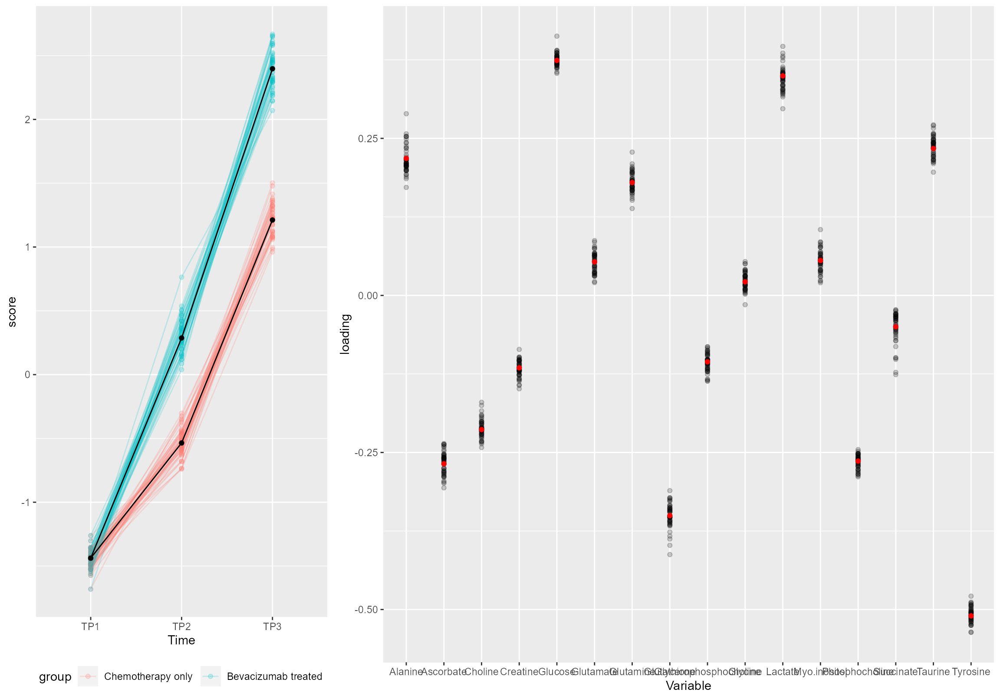
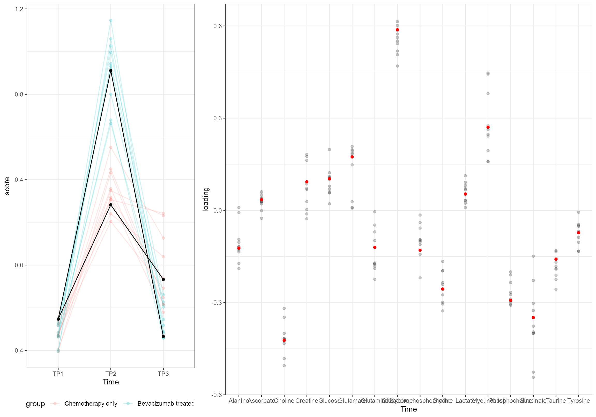
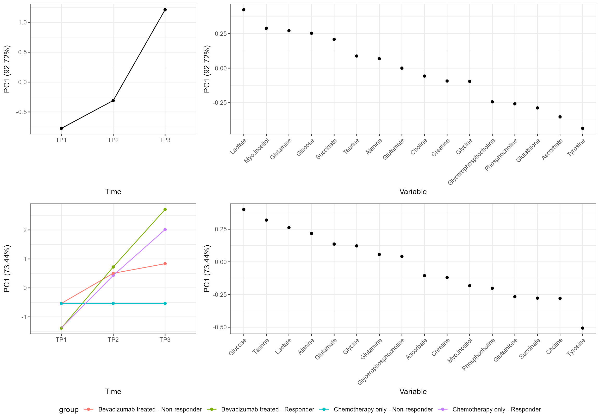
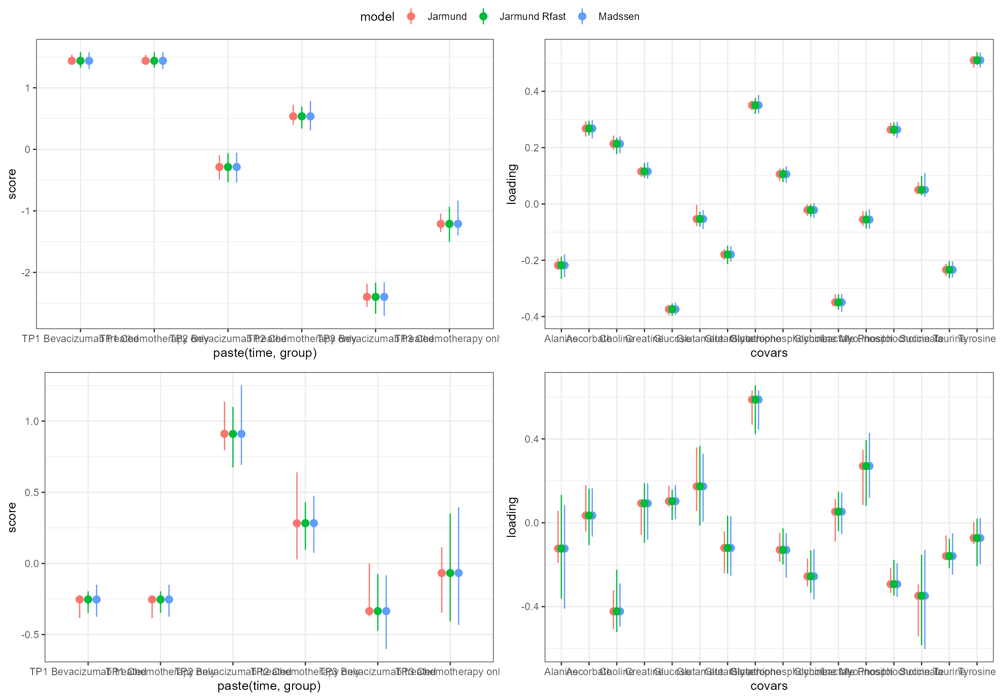
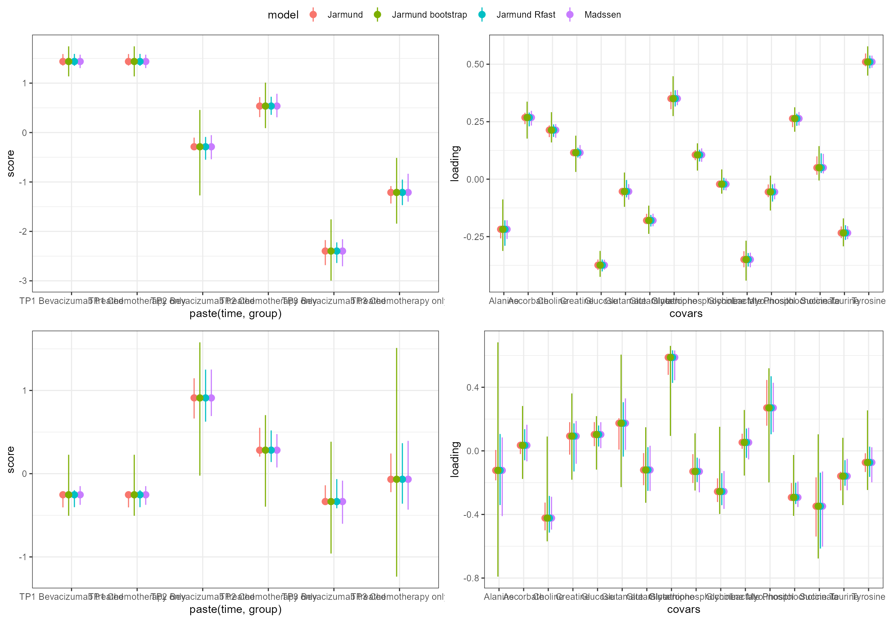

Metabolomics
This time we will look at a small metabolomics dataset by Euceda et al. (2017) and replicate the findings of Madssen et al. (2020). Note that this is an example of ALASCA applied on intervention data. If you are more interested in repeated measures observational data, have a look at the preeclampsia vignette. If you want an introduction to ALASCA, have a look at Get Started.
Let us start by having a quick look at it:
do.call(
ggarrange,
c(plotParts(df, participantColumn = "ID", valueColumn = "value", addSmooth = NA),
common.legend = TRUE, legend = "bottom")
)
All metabolite responses were log-transformed before analysis, and the effect matrix was mean-centered before PCA.
But our data is already log-transformed, and centering is handled by ALASCA(). However, as instructed by the authors, we need to scale each metabolite with the standard deviation at baseline. So let us set the desired reference groups and normalize:
Without any fuss, let us see what ALASCA makes out of it using the same model as Madssen et al. (2020). Note that we have to forceEqualBaseline to remove the interaction term for TP1 * treatment.
form <- value ~ time + time:group + (1|ID)
mod <- ALASCA(df, form, separateTimeAndGroup = FALSE, forceEqualBaseline = TRUE, scaleFun = scaleFun)
#> Will use linear mixed models!
#> Using group for stratification.
#> Scaling data with custom function...
#> Calculating LMM coefficients...
#> Registered S3 methods overwritten by 'lme4':
#> method from
#> cooks.distance.influence.merMod car
#> influence.merMod car
#> dfbeta.influence.merMod car
#> dfbetas.influence.merMod car
#> Finished calculating regression coefficients!
#> Calculating predictions from regression models...
#> Finished calculating predictions from regression models!
#> Calculating effect matrix
#> Finished calculating effect matrix!Let us check that our model is as expected:
summary(mod$regr.model[[1]])
#> Linear mixed model fit by REML. t-tests use Satterthwaite's method [
#> lmerModLmerTest]
#> Formula: object$newformula
#> Data: object$df[variable == x]
#>
#> REML criterion at convergence: 761.7
#>
#> Scaled residuals:
#> Min 1Q Median 3Q Max
#> -2.9769 -0.4910 0.1554 0.5865 2.2444
#>
#> Random effects:
#> Groups Name Variance Std.Dev.
#> ID (Intercept) 0.2480 0.4980
#> Residual 0.7558 0.8694
#> Number of obs: 270, groups: ID, 122
#>
#> Fixed effects:
#> Estimate Std. Error df t value
#> (Intercept) 0.49104 0.09724 252.05390 5.050
#> modmattimeTP2 0.37490 0.16984 211.02402 2.207
#> modmattimeTP3 0.90964 0.17427 220.72035 5.220
#> modmattimeTP2:groupBevacizumab treated 0.40580 0.21992 256.50552 1.845
#> modmattimeTP3:groupBevacizumab treated 0.55303 0.20953 258.87566 2.639
#> Pr(>|t|)
#> (Intercept) 8.49e-07 ***
#> modmattimeTP2 0.02837 *
#> modmattimeTP3 4.13e-07 ***
#> modmattimeTP2:groupBevacizumab treated 0.06616 .
#> modmattimeTP3:groupBevacizumab treated 0.00881 **
#> ---
#> Signif. codes: 0 '***' 0.001 '**' 0.01 '*' 0.05 '.' 0.1 ' ' 1
#>
#> Correlation of Fixed Effects:
#> (Intr) mdmTP2 mdmTP3 mTP2:t
#> modmattmTP2 -0.451
#> modmattmTP3 -0.449 0.312
#> mdmttTP2:Bt -0.001 -0.615 -0.084
#> mdmttTP3:Bt 0.013 -0.096 -0.670 0.139And now, let us plot it:
screeplot(mod)
And compare to the original plot:


Note that we used the function to flip the loadings and scores to produce similar plots as in the original article.
plot(mod, component = 2)
As we can see, it looks indeed as a very good match with the original findings.
Let us validate our model (outside knitr, it uses about 2 seconds per run),
mod$nValRuns = 10
mod.val <- validate(mod, participantColumn = "ID", validateRegression = FALSE)
#> Running validation...
#> - Run 1 of 10
#> --- Used 1.96 seconds. Est. time remaining: 17.64 seconds
#> - Run 2 of 10
#> --- Used 1.96 seconds. Est. time remaining: 15.68 seconds
#> - Run 3 of 10
#> --- Used 1.73 seconds. Est. time remaining: 13.17 seconds
#> - Run 4 of 10
#> --- Used 1.87 seconds. Est. time remaining: 11.28 seconds
#> - Run 5 of 10
#> --- Used 1.74 seconds. Est. time remaining: 9.26 seconds
#> - Run 6 of 10
#> --- Used 1.84 seconds. Est. time remaining: 7.4 seconds
#> - Run 7 of 10
#> --- Used 1.77 seconds. Est. time remaining: 5.52 seconds
#> - Run 8 of 10
#> --- Used 1.85 seconds. Est. time remaining: 3.68 seconds
#> - Run 9 of 10
#> --- Used 2.2 seconds. Est. time remaining: 1.88 seconds
#> - Run 10 of 10
#> --- Used 1.76 seconds. Est. time remaining: 0 seconds
#> - Calculates percentiles for score and loading...
mod.val <- flipIt(mod.val, component = 1)The result:
plot(mod.val)
plot(mod.val, component = 2)
Or if want to see the validation models instead of error bars:
plotVal(mod.val)
plotVal(mod.val, component = 2)
Using Rfast
However, there is a way to increase speed: method = "Rfast" will employ the Rfast package, which is usually much faster (in this case, we get about an order of magnitude better):
mod.Rfast <- ALASCA(df, form,
separateTimeAndGroup = FALSE,
forceEqualBaseline = TRUE,
scaleFun = scaleFun,
validate = TRUE,
nValRuns = 50,
method = "Rfast")
#> Will use Rfast!
#> Using group for stratification.
#> Scaling data with custom function...
#> Calculating Rfast coefficients...
#> Finished calculating regression coefficients!
#> Calculating effect matrix
#> Finished calculating effect matrix!
#> Running validation...
#> - Run 1 of 50
#> --- Used 0.13 seconds. Est. time remaining: 6.3 seconds
#> - Run 2 of 50
#> --- Used 0.1 seconds. Est. time remaining: 5.53 seconds
#> - Run 3 of 50
#> --- Used 0.13 seconds. Est. time remaining: 5.66 seconds
#> - Run 4 of 50
#> --- Used 0.13 seconds. Est. time remaining: 5.62 seconds
#> - Run 5 of 50
#> --- Used 0.12 seconds. Est. time remaining: 5.45 seconds
#> - Run 6 of 50
#> --- Used 0.13 seconds. Est. time remaining: 5.43 seconds
#> - Run 7 of 50
#> --- Used 0.1 seconds. Est. time remaining: 5.19 seconds
#> - Run 8 of 50
#> --- Used 0.12 seconds. Est. time remaining: 5.04 seconds
#> - Run 9 of 50
#> --- Used 0.11 seconds. Est. time remaining: 4.86 seconds
#> - Run 10 of 50
#> --- Used 0.16 seconds. Est. time remaining: 4.91 seconds
#> - Run 11 of 50
#> --- Used 0.15 seconds. Est. time remaining: 4.9 seconds
#> - Run 12 of 50
#> --- Used 0.12 seconds. Est. time remaining: 4.77 seconds
#> - Run 13 of 50
#> --- Used 0.11 seconds. Est. time remaining: 4.61 seconds
#> - Run 14 of 50
#> --- Used 0.13 seconds. Est. time remaining: 4.48 seconds
#> - Run 15 of 50
#> --- Used 0.11 seconds. Est. time remaining: 4.33 seconds
#> - Run 16 of 50
#> --- Used 0.13 seconds. Est. time remaining: 4.22 seconds
#> - Run 17 of 50
#> --- Used 0.13 seconds. Est. time remaining: 4.1 seconds
#> - Run 18 of 50
#> --- Used 0.09 seconds. Est. time remaining: 3.92 seconds
#> - Run 19 of 50
#> --- Used 0.12 seconds. Est. time remaining: 3.79 seconds
#> - Run 20 of 50
#> --- Used 0.11 seconds. Est. time remaining: 3.65 seconds
#> - Run 21 of 50
#> --- Used 0.13 seconds. Est. time remaining: 3.54 seconds
#> - Run 22 of 50
#> --- Used 0.12 seconds. Est. time remaining: 3.42 seconds
#> - Run 23 of 50
#> --- Used 0.11 seconds. Est. time remaining: 3.28 seconds
#> - Run 24 of 50
#> --- Used 0.13 seconds. Est. time remaining: 3.17 seconds
#> - Run 25 of 50
#> --- Used 0.1 seconds. Est. time remaining: 3.03 seconds
#> - Run 26 of 50
#> --- Used 0.12 seconds. Est. time remaining: 2.91 seconds
#> - Run 27 of 50
#> --- Used 0.1 seconds. Est. time remaining: 2.77 seconds
#> - Run 28 of 50
#> --- Used 0.1 seconds. Est. time remaining: 2.64 seconds
#> - Run 29 of 50
#> --- Used 0.16 seconds. Est. time remaining: 2.55 seconds
#> - Run 30 of 50
#> --- Used 0.14 seconds. Est. time remaining: 2.44 seconds
#> - Run 31 of 50
#> --- Used 0.15 seconds. Est. time remaining: 2.34 seconds
#> - Run 32 of 50
#> --- Used 0.15 seconds. Est. time remaining: 2.23 seconds
#> - Run 33 of 50
#> --- Used 0.12 seconds. Est. time remaining: 2.1 seconds
#> - Run 34 of 50
#> --- Used 0.12 seconds. Est. time remaining: 1.98 seconds
#> - Run 35 of 50
#> --- Used 0.14 seconds. Est. time remaining: 1.86 seconds
#> - Run 36 of 50
#> --- Used 0.12 seconds. Est. time remaining: 1.73 seconds
#> - Run 37 of 50
#> --- Used 0.13 seconds. Est. time remaining: 1.61 seconds
#> - Run 38 of 50
#> --- Used 0.11 seconds. Est. time remaining: 1.48 seconds
#> - Run 39 of 50
#> --- Used 0.11 seconds. Est. time remaining: 1.35 seconds
#> - Run 40 of 50
#> --- Used 0.13 seconds. Est. time remaining: 1.23 seconds
#> - Run 41 of 50
#> --- Used 0.11 seconds. Est. time remaining: 1.11 seconds
#> - Run 42 of 50
#> --- Used 0.12 seconds. Est. time remaining: 0.98 seconds
#> - Run 43 of 50
#> --- Used 0.11 seconds. Est. time remaining: 0.86 seconds
#> - Run 44 of 50
#> --- Used 0.12 seconds. Est. time remaining: 0.73 seconds
#> - Run 45 of 50
#> --- Used 0.12 seconds. Est. time remaining: 0.61 seconds
#> - Run 46 of 50
#> --- Used 0.11 seconds. Est. time remaining: 0.49 seconds
#> - Run 47 of 50
#> --- Used 0.12 seconds. Est. time remaining: 0.37 seconds
#> - Run 48 of 50
#> --- Used 0.12 seconds. Est. time remaining: 0.24 seconds
#> - Run 49 of 50
#> --- Used 0.13 seconds. Est. time remaining: 0.12 seconds
#> - Run 50 of 50
#> --- Used 0.28 seconds. Est. time remaining: 0 seconds
#> - Calculates percentiles for score and loading...
mod.Rfast <- flipIt(mod.Rfast)Using Bootstrapping
However, there is a way to increase speed: method = "Rfast" will employ the Rfast package, which is usually much faster (in this case, we get about an order of magnitude better):
mod.Rfast.bootstrap <- ALASCA(df, form,
separateTimeAndGroup = FALSE,
forceEqualBaseline = TRUE,
scaleFun = scaleFun,
validate = TRUE,
nValRuns = 100,
method = "Rfast", validationMethod = "bootstrap")
#> Will use Rfast!
#> Using group for stratification.
#> Scaling data with custom function...
#> Calculating Rfast coefficients...
#> Finished calculating regression coefficients!
#> Calculating effect matrix
#> Finished calculating effect matrix!
#> Running validation...
#> - Run 1 of 100
#> --- Used 0.14 seconds. Est. time remaining: 14.02 seconds
#> - Run 2 of 100
#> --- Used 0.14 seconds. Est. time remaining: 13.73 seconds
#> - Run 3 of 100
#> --- Used 0.13 seconds. Est. time remaining: 13.29 seconds
#> - Run 4 of 100
#> --- Used 0.14 seconds. Est. time remaining: 13.31 seconds
#> - Run 5 of 100
#> --- Used 0.15 seconds. Est. time remaining: 13.42 seconds
#> - Run 6 of 100
#> --- Used 0.14 seconds. Est. time remaining: 13.25 seconds
#> - Run 7 of 100
#> --- Used 0.14 seconds. Est. time remaining: 13.07 seconds
#> - Run 8 of 100
#> --- Used 0.14 seconds. Est. time remaining: 12.98 seconds
#> - Run 9 of 100
#> --- Used 0.14 seconds. Est. time remaining: 12.87 seconds
#> - Run 10 of 100
#> --- Used 0.31 seconds. Est. time remaining: 14.28 seconds
#> - Run 11 of 100
#> --- Used 0.13 seconds. Est. time remaining: 13.93 seconds
#> - Run 12 of 100
#> --- Used 0.13 seconds. Est. time remaining: 13.58 seconds
#> - Run 13 of 100
#> --- Used 0.14 seconds. Est. time remaining: 13.3 seconds
#> - Run 14 of 100
#> --- Used 0.13 seconds. Est. time remaining: 13.01 seconds
#> - Run 15 of 100
#> --- Used 0.14 seconds. Est. time remaining: 12.8 seconds
#> - Run 16 of 100
#> --- Used 0.13 seconds. Est. time remaining: 12.57 seconds
#> - Run 17 of 100
#> --- Used 0.13 seconds. Est. time remaining: 12.35 seconds
#> - Run 18 of 100
#> --- Used 0.15 seconds. Est. time remaining: 12.22 seconds
#> - Run 19 of 100
#> --- Used 0.13 seconds. Est. time remaining: 12 seconds
#> - Run 20 of 100
#> --- Used 0.14 seconds. Est. time remaining: 11.81 seconds
#> - Run 21 of 100
#> --- Used 0.15 seconds. Est. time remaining: 11.68 seconds
#> - Run 22 of 100
#> --- Used 0.13 seconds. Est. time remaining: 11.47 seconds
#> - Run 23 of 100
#> --- Used 0.13 seconds. Est. time remaining: 11.27 seconds
#> - Run 24 of 100
#> --- Used 0.14 seconds. Est. time remaining: 11.1 seconds
#> - Run 25 of 100
#> --- Used 0.14 seconds. Est. time remaining: 10.92 seconds
#> - Run 26 of 100
#> --- Used 0.14 seconds. Est. time remaining: 10.75 seconds
#> - Run 27 of 100
#> --- Used 0.13 seconds. Est. time remaining: 10.58 seconds
#> - Run 28 of 100
#> --- Used 0.14 seconds. Est. time remaining: 10.43 seconds
#> - Run 29 of 100
#> --- Used 0.14 seconds. Est. time remaining: 10.26 seconds
#> - Run 30 of 100
#> --- Used 0.13 seconds. Est. time remaining: 10.09 seconds
#> - Run 31 of 100
#> --- Used 0.14 seconds. Est. time remaining: 9.94 seconds
#> - Run 32 of 100
#> --- Used 0.14 seconds. Est. time remaining: 9.78 seconds
#> - Run 33 of 100
#> --- Used 0.14 seconds. Est. time remaining: 9.62 seconds
#> - Run 34 of 100
#> --- Used 0.14 seconds. Est. time remaining: 9.48 seconds
#> - Run 35 of 100
#> --- Used 0.13 seconds. Est. time remaining: 9.32 seconds
#> - Run 36 of 100
#> --- Used 0.14 seconds. Est. time remaining: 9.16 seconds
#> - Run 37 of 100
#> --- Used 0.14 seconds. Est. time remaining: 9.02 seconds
#> - Run 38 of 100
#> --- Used 0.13 seconds. Est. time remaining: 8.85 seconds
#> - Run 39 of 100
#> --- Used 0.14 seconds. Est. time remaining: 8.7 seconds
#> - Run 40 of 100
#> --- Used 0.15 seconds. Est. time remaining: 8.56 seconds
#> - Run 41 of 100
#> --- Used 0.13 seconds. Est. time remaining: 8.4 seconds
#> - Run 42 of 100
#> --- Used 0.15 seconds. Est. time remaining: 8.27 seconds
#> - Run 43 of 100
#> --- Used 0.16 seconds. Est. time remaining: 8.16 seconds
#> - Run 44 of 100
#> --- Used 0.15 seconds. Est. time remaining: 8.02 seconds
#> - Run 45 of 100
#> --- Used 0.15 seconds. Est. time remaining: 7.89 seconds
#> - Run 46 of 100
#> --- Used 0.15 seconds. Est. time remaining: 7.75 seconds
#> - Run 47 of 100
#> --- Used 0.14 seconds. Est. time remaining: 7.6 seconds
#> - Run 48 of 100
#> --- Used 0.14 seconds. Est. time remaining: 7.45 seconds
#> - Run 49 of 100
#> --- Used 0.14 seconds. Est. time remaining: 7.31 seconds
#> - Run 50 of 100
#> --- Used 0.14 seconds. Est. time remaining: 7.17 seconds
#> - Run 51 of 100
#> --- Used 0.13 seconds. Est. time remaining: 7.02 seconds
#> - Run 52 of 100
#> --- Used 0.14 seconds. Est. time remaining: 6.87 seconds
#> - Run 53 of 100
#> --- Used 0.17 seconds. Est. time remaining: 6.75 seconds
#> - Run 54 of 100
#> --- Used 0.15 seconds. Est. time remaining: 6.61 seconds
#> - Run 55 of 100
#> --- Used 0.14 seconds. Est. time remaining: 6.46 seconds
#> - Run 56 of 100
#> --- Used 0.15 seconds. Est. time remaining: 6.33 seconds
#> - Run 57 of 100
#> --- Used 0.13 seconds. Est. time remaining: 6.17 seconds
#> - Run 58 of 100
#> --- Used 0.14 seconds. Est. time remaining: 6.03 seconds
#> - Run 59 of 100
#> --- Used 0.15 seconds. Est. time remaining: 5.89 seconds
#> - Run 60 of 100
#> --- Used 0.13 seconds. Est. time remaining: 5.74 seconds
#> - Run 61 of 100
#> --- Used 0.14 seconds. Est. time remaining: 5.59 seconds
#> - Run 62 of 100
#> --- Used 0.14 seconds. Est. time remaining: 5.44 seconds
#> - Run 63 of 100
#> --- Used 0.14 seconds. Est. time remaining: 5.3 seconds
#> - Run 64 of 100
#> --- Used 0.14 seconds. Est. time remaining: 5.15 seconds
#> - Run 65 of 100
#> --- Used 0.14 seconds. Est. time remaining: 5.01 seconds
#> - Run 66 of 100
#> --- Used 0.14 seconds. Est. time remaining: 4.86 seconds
#> - Run 67 of 100
#> --- Used 0.14 seconds. Est. time remaining: 4.72 seconds
#> - Run 68 of 100
#> --- Used 0.14 seconds. Est. time remaining: 4.57 seconds
#> - Run 69 of 100
#> --- Used 0.13 seconds. Est. time remaining: 4.43 seconds
#> - Run 70 of 100
#> --- Used 0.14 seconds. Est. time remaining: 4.28 seconds
#> - Run 71 of 100
#> --- Used 0.14 seconds. Est. time remaining: 4.14 seconds
#> - Run 72 of 100
#> --- Used 0.14 seconds. Est. time remaining: 3.99 seconds
#> - Run 73 of 100
#> --- Used 0.14 seconds. Est. time remaining: 3.85 seconds
#> - Run 74 of 100
#> --- Used 0.14 seconds. Est. time remaining: 3.71 seconds
#> - Run 75 of 100
#> --- Used 0.14 seconds. Est. time remaining: 3.56 seconds
#> - Run 76 of 100
#> --- Used 0.14 seconds. Est. time remaining: 3.42 seconds
#> - Run 77 of 100
#> --- Used 0.15 seconds. Est. time remaining: 3.28 seconds
#> - Run 78 of 100
#> --- Used 0.14 seconds. Est. time remaining: 3.14 seconds
#> - Run 79 of 100
#> --- Used 0.14 seconds. Est. time remaining: 2.99 seconds
#> - Run 80 of 100
#> --- Used 0.14 seconds. Est. time remaining: 2.85 seconds
#> - Run 81 of 100
#> --- Used 0.14 seconds. Est. time remaining: 2.71 seconds
#> - Run 82 of 100
#> --- Used 0.15 seconds. Est. time remaining: 2.57 seconds
#> - Run 83 of 100
#> --- Used 0.14 seconds. Est. time remaining: 2.42 seconds
#> - Run 84 of 100
#> --- Used 0.16 seconds. Est. time remaining: 2.28 seconds
#> - Run 85 of 100
#> --- Used 0.13 seconds. Est. time remaining: 2.14 seconds
#> - Run 86 of 100
#> --- Used 0.15 seconds. Est. time remaining: 2 seconds
#> - Run 87 of 100
#> --- Used 0.15 seconds. Est. time remaining: 1.85 seconds
#> - Run 88 of 100
#> --- Used 0.13 seconds. Est. time remaining: 1.71 seconds
#> - Run 89 of 100
#> --- Used 0.16 seconds. Est. time remaining: 1.57 seconds
#> - Run 90 of 100
#> --- Used 0.15 seconds. Est. time remaining: 1.43 seconds
#> - Run 91 of 100
#> --- Used 0.14 seconds. Est. time remaining: 1.29 seconds
#> - Run 92 of 100
#> --- Used 0.15 seconds. Est. time remaining: 1.14 seconds
#> - Run 93 of 100
#> --- Used 0.15 seconds. Est. time remaining: 1 seconds
#> - Run 94 of 100
#> --- Used 0.13 seconds. Est. time remaining: 0.86 seconds
#> - Run 95 of 100
#> --- Used 0.16 seconds. Est. time remaining: 0.72 seconds
#> - Run 96 of 100
#> --- Used 0.15 seconds. Est. time remaining: 0.57 seconds
#> - Run 97 of 100
#> --- Used 0.15 seconds. Est. time remaining: 0.43 seconds
#> - Run 98 of 100
#> --- Used 0.14 seconds. Est. time remaining: 0.29 seconds
#> - Run 99 of 100
#> --- Used 0.15 seconds. Est. time remaining: 0.14 seconds
#> - Run 100 of 100
#> --- Used 0.15 seconds. Est. time remaining: 0 seconds
#> - Calculates percentiles for score and loading...
mod.Rfast.bootstrap <- flipIt(mod.Rfast.bootstrap)More interaction term
Sometimes we need mote advanced models than the one demonstrated above. For example, the dataset contains both responders and responders, and these groups may be different at baseline. Thus, we cannot simply make four groups and rerun the model above. We can add more terms to the formula, and specify that we want to keep them in the effect matrix by listing them in a vector given to keepTerms,
form <- value ~ time + response + time:group:response + (1|ID)
mod.interaction <- ALASCA(df, form,
separateTimeAndGroup = FALSE,
forceEqualBaseline = TRUE,
scaleFun = scaleFun,
method = "Rfast",
validate = FALSE,
keepTerms = c("response"))
#> Will use Rfast!
#> Using group for stratification.
#> Scaling data with custom function...
#> Calculating Rfast coefficients...
#> Finished calculating regression coefficients!
#> Calculating effect matrix
#> Finished calculating effect matrix!
plot(mod.interaction)
The responders start out with lower levels of glucose, but have a steeper increase - interesting!
Separating time and group effects
It may sometimes be illustrative to extract the general time development in the model. To do this, we use separateTimeAndGroup = TRUE
There is a bug here, and this should not be used!
form <- value ~ time + response + time:group:response + (1|ID)
df$response <- factor(df$response)
df$response <- relevel(df$response, ref = "Responder")
df$group <- factor(df$group)
df$group <- relevel(df$group, ref = "Bevacizumab treated")
mod.interaction <- ALASCA(df, form,
separateTimeAndGroup = TRUE,
forceEqualBaseline = TRUE,
scaleFun = scaleFun,
validate = FALSE,
keepTerms = c("response"))
#> Will use linear mixed models!
#> Using group for stratification.
#> Scaling data with custom function...
#> Calculating LMM coefficients...
#> Finished calculating regression coefficients!
#> Calculating predictions from regression models...
#> Finished calculating predictions from regression models!
#> Calculating effect matrix
#> Finished calculating effect matrix!
plot(mod.interaction)
Permutation testing
We have implemented a simple permutation test for getting P values.
mod.perm <- ALASCA(df, form, separateTimeAndGroup = FALSE, forceEqualBaseline = TRUE,
scaleFun = scaleFun, method = "Rfast", validate = TRUE,
validationMethod = "permutation", nValRuns = 1000)
#> Will use Rfast!
#> Using group for stratification.
#> Scaling data with custom function...
#> Calculating Rfast coefficients...
#> Finished calculating regression coefficients!
#> Calculating effect matrix
#> Finished calculating effect matrix!
#> Running validation...
#> - Run 1 of 1000
#> --- Used 0.55 seconds. Est. time remaining: 545 seconds
#> - Run 2 of 1000
#> --- Used 0.75 seconds. Est. time remaining: 646.48 seconds
#> - Run 3 of 1000
#> --- Used 0.48 seconds. Est. time remaining: 591.31 seconds
#> - Run 4 of 1000
#> --- Used 0.51 seconds. Est. time remaining: 569 seconds
#> - Run 5 of 1000
#> --- Used 0.56 seconds. Est. time remaining: 565.84 seconds
#> - Run 6 of 1000
#> --- Used 0.5 seconds. Est. time remaining: 554.34 seconds
#> - Run 7 of 1000
#> --- Used 0.48 seconds. Est. time remaining: 543.29 seconds
#> - Run 8 of 1000
#> --- Used 0.56 seconds. Est. time remaining: 544.77 seconds
#> - Run 9 of 1000
#> --- Used 0.51 seconds. Est. time remaining: 540.2 seconds
#> - Run 10 of 1000
#> --- Used 0.53 seconds. Est. time remaining: 537.92 seconds
#> - Run 11 of 1000
#> --- Used 0.57 seconds. Est. time remaining: 539.82 seconds
#> - Run 12 of 1000
#> --- Used 0.59 seconds. Est. time remaining: 543.27 seconds
#> - Run 13 of 1000
#> --- Used 0.58 seconds. Est. time remaining: 545.35 seconds
#> - Run 14 of 1000
#> --- Used 0.66 seconds. Est. time remaining: 552.17 seconds
#> - Run 15 of 1000
#> --- Used 0.62 seconds. Est. time remaining: 555.5 seconds
#> - Run 16 of 1000
#> --- Used 0.68 seconds. Est. time remaining: 561.97 seconds
#> - Run 17 of 1000
#> --- Used 0.52 seconds. Est. time remaining: 558.53 seconds
#> - Run 18 of 1000
#> --- Used 0.52 seconds. Est. time remaining: 555.59 seconds
#> - Run 19 of 1000
#> --- Used 0.51 seconds. Est. time remaining: 552.33 seconds
#> - Run 20 of 1000
#> --- Used 0.7 seconds. Est. time remaining: 558.43 seconds
#> - Run 21 of 1000
#> --- Used 0.5 seconds. Est. time remaining: 554.59 seconds
#> - Run 22 of 1000
#> --- Used 0.78 seconds. Est. time remaining: 563.51 seconds
#> - Run 23 of 1000
#> --- Used 0.63 seconds. Est. time remaining: 565.07 seconds
#> - Run 24 of 1000
#> --- Used 0.58 seconds. Est. time remaining: 564.62 seconds
#> - Run 25 of 1000
#> --- Used 0.5 seconds. Est. time remaining: 560.81 seconds
#> - Run 26 of 1000
#> --- Used 0.53 seconds. Est. time remaining: 558.49 seconds
#> - Run 27 of 1000
#> --- Used 0.5 seconds. Est. time remaining: 555.29 seconds
#> - Run 28 of 1000
#> --- Used 0.49 seconds. Est. time remaining: 551.98 seconds
#> - Run 29 of 1000
#> --- Used 0.53 seconds. Est. time remaining: 550.03 seconds
#> - Run 30 of 1000
#> --- Used 0.46 seconds. Est. time remaining: 546.11 seconds
#> - Run 31 of 1000
#> --- Used 0.51 seconds. Est. time remaining: 543.88 seconds
#> - Run 32 of 1000
#> --- Used 0.62 seconds. Est. time remaining: 545.23 seconds
#> - Run 33 of 1000
#> --- Used 0.54 seconds. Est. time remaining: 544.06 seconds
#> - Run 34 of 1000
#> --- Used 0.48 seconds. Est. time remaining: 541.05 seconds
#> - Run 35 of 1000
#> --- Used 0.56 seconds. Est. time remaining: 540.53 seconds
#> - Run 36 of 1000
#> --- Used 0.47 seconds. Est. time remaining: 537.47 seconds
#> - Run 37 of 1000
#> --- Used 0.66 seconds. Est. time remaining: 539.67 seconds
#> - Run 38 of 1000
#> --- Used 0.53 seconds. Est. time remaining: 538.3 seconds
#> - Run 39 of 1000
#> --- Used 0.58 seconds. Est. time remaining: 538.33 seconds
#> - Run 40 of 1000
#> --- Used 0.49 seconds. Est. time remaining: 536.03 seconds
#> - Run 41 of 1000
#> --- Used 0.51 seconds. Est. time remaining: 534.36 seconds
#> - Run 42 of 1000
#> --- Used 0.48 seconds. Est. time remaining: 532.03 seconds
#> - Run 43 of 1000
#> --- Used 0.55 seconds. Est. time remaining: 531.39 seconds
#> - Run 44 of 1000
#> --- Used 0.47 seconds. Est. time remaining: 528.94 seconds
#> - Run 45 of 1000
#> --- Used 0.49 seconds. Est. time remaining: 527.1 seconds
#> - Run 46 of 1000
#> --- Used 0.56 seconds. Est. time remaining: 526.72 seconds
#> - Run 47 of 1000
#> --- Used 0.81 seconds. Est. time remaining: 531.32 seconds
#> - Run 48 of 1000
#> --- Used 0.5 seconds. Est. time remaining: 529.71 seconds
#> - Run 49 of 1000
#> --- Used 0.71 seconds. Est. time remaining: 532.16 seconds
#> - Run 50 of 1000
#> --- Used 0.47 seconds. Est. time remaining: 529.87 seconds
#> - Run 51 of 1000
#> --- Used 0.56 seconds. Est. time remaining: 529.31 seconds
#> - Run 52 of 1000
#> --- Used 0.49 seconds. Est. time remaining: 527.53 seconds
#> - Run 53 of 1000
#> --- Used 0.5 seconds. Est. time remaining: 525.99 seconds
#> - Run 54 of 1000
#> --- Used 0.5 seconds. Est. time remaining: 524.44 seconds
#> - Run 55 of 1000
#> --- Used 0.62 seconds. Est. time remaining: 524.94 seconds
#> - Run 56 of 1000
#> --- Used 0.53 seconds. Est. time remaining: 523.91 seconds
#> - Run 57 of 1000
#> --- Used 0.49 seconds. Est. time remaining: 522.31 seconds
#> - Run 58 of 1000
#> --- Used 0.57 seconds. Est. time remaining: 521.94 seconds
#> - Run 59 of 1000
#> --- Used 0.5 seconds. Est. time remaining: 520.54 seconds
#> - Run 60 of 1000
#> --- Used 0.52 seconds. Est. time remaining: 519.43 seconds
#> - Run 61 of 1000
#> --- Used 0.6 seconds. Est. time remaining: 519.57 seconds
#> - Run 62 of 1000
#> --- Used 0.68 seconds. Est. time remaining: 520.95 seconds
#> - Run 63 of 1000
#> --- Used 0.45 seconds. Est. time remaining: 518.79 seconds
#> - Run 64 of 1000
#> --- Used 0.71 seconds. Est. time remaining: 520.5 seconds
#> - Run 65 of 1000
#> --- Used 0.69 seconds. Est. time remaining: 521.83 seconds
#> - Run 66 of 1000
#> --- Used 0.62 seconds. Est. time remaining: 522.11 seconds
#> - Run 67 of 1000
#> --- Used 0.5 seconds. Est. time remaining: 520.67 seconds
#> - Run 68 of 1000
#> --- Used 0.53 seconds. Est. time remaining: 519.74 seconds
#> - Run 69 of 1000
#> --- Used 0.53 seconds. Est. time remaining: 518.82 seconds
#> - Run 70 of 1000
#> --- Used 0.5 seconds. Est. time remaining: 517.53 seconds
#> - Run 71 of 1000
#> --- Used 0.57 seconds. Est. time remaining: 517.2 seconds
#> - Run 72 of 1000
#> --- Used 0.74 seconds. Est. time remaining: 518.98 seconds
#> - Run 73 of 1000
#> --- Used 0.64 seconds. Est. time remaining: 519.48 seconds
#> - Run 74 of 1000
#> --- Used 0.78 seconds. Est. time remaining: 521.68 seconds
#> - Run 75 of 1000
#> --- Used 0.86 seconds. Est. time remaining: 524.73 seconds
#> - Run 76 of 1000
#> --- Used 0.8 seconds. Est. time remaining: 526.93 seconds
#> - Run 77 of 1000
#> --- Used 0.73 seconds. Est. time remaining: 528.28 seconds
#> - Run 78 of 1000
#> --- Used 0.79 seconds. Est. time remaining: 530.24 seconds
#> - Run 79 of 1000
#> --- Used 0.62 seconds. Est. time remaining: 530.22 seconds
#> - Run 80 of 1000
#> --- Used 0.71 seconds. Est. time remaining: 531.16 seconds
#> - Run 81 of 1000
#> --- Used 0.7 seconds. Est. time remaining: 531.95 seconds
#> - Run 82 of 1000
#> --- Used 0.65 seconds. Est. time remaining: 532.15 seconds
#> - Run 83 of 1000
#> --- Used 0.55 seconds. Est. time remaining: 531.25 seconds
#> - Run 84 of 1000
#> --- Used 0.51 seconds. Est. time remaining: 529.9 seconds
#> - Run 85 of 1000
#> --- Used 0.8 seconds. Est. time remaining: 531.7 seconds
#> - Run 86 of 1000
#> --- Used 0.64 seconds. Est. time remaining: 531.7 seconds
#> - Run 87 of 1000
#> --- Used 0.7 seconds. Est. time remaining: 532.4 seconds
#> - Run 88 of 1000
#> --- Used 0.62 seconds. Est. time remaining: 532.23 seconds
#> - Run 89 of 1000
#> --- Used 0.54 seconds. Est. time remaining: 531.21 seconds
#> - Run 90 of 1000
#> --- Used 0.74 seconds. Est. time remaining: 532.19 seconds
#> - Run 91 of 1000
#> --- Used 0.66 seconds. Est. time remaining: 532.39 seconds
#> - Run 92 of 1000
#> --- Used 0.58 seconds. Est. time remaining: 531.79 seconds
#> - Run 93 of 1000
#> --- Used 0.52 seconds. Est. time remaining: 530.58 seconds
#> - Run 94 of 1000
#> --- Used 0.81 seconds. Est. time remaining: 532.12 seconds
#> - Run 95 of 1000
#> --- Used 0.7 seconds. Est. time remaining: 532.6 seconds
#> - Run 96 of 1000
#> --- Used 0.76 seconds. Est. time remaining: 533.66 seconds
#> - Run 97 of 1000
#> --- Used 0.5 seconds. Est. time remaining: 532.21 seconds
#> - Run 98 of 1000
#> --- Used 0.56 seconds. Est. time remaining: 531.32 seconds
#> - Run 99 of 1000
#> --- Used 0.58 seconds. Est. time remaining: 530.66 seconds
#> - Run 100 of 1000
#> --- Used 0.72 seconds. Est. time remaining: 531.21 seconds
#> - Run 101 of 1000
#> --- Used 0.59 seconds. Est. time remaining: 530.61 seconds
#> - Run 102 of 1000
#> --- Used 0.7 seconds. Est. time remaining: 531 seconds
#> - Run 103 of 1000
#> --- Used 0.63 seconds. Est. time remaining: 530.74 seconds
#> - Run 104 of 1000
#> --- Used 0.61 seconds. Est. time remaining: 530.35 seconds
#> - Run 105 of 1000
#> --- Used 0.56 seconds. Est. time remaining: 529.45 seconds
#> - Run 106 of 1000
#> --- Used 0.55 seconds. Est. time remaining: 528.54 seconds
#> - Run 107 of 1000
#> --- Used 0.52 seconds. Est. time remaining: 527.34 seconds
#> - Run 108 of 1000
#> --- Used 0.57 seconds. Est. time remaining: 526.59 seconds
#> - Run 109 of 1000
#> --- Used 0.66 seconds. Est. time remaining: 526.58 seconds
#> - Run 110 of 1000
#> --- Used 0.56 seconds. Est. time remaining: 525.73 seconds
#> - Run 111 of 1000
#> --- Used 0.57 seconds. Est. time remaining: 524.96 seconds
#> - Run 112 of 1000
#> --- Used 0.49 seconds. Est. time remaining: 523.59 seconds
#> - Run 113 of 1000
#> --- Used 0.56 seconds. Est. time remaining: 522.78 seconds
#> - Run 114 of 1000
#> --- Used 0.58 seconds. Est. time remaining: 522.15 seconds
#> - Run 115 of 1000
#> --- Used 0.61 seconds. Est. time remaining: 521.69 seconds
#> - Run 116 of 1000
#> --- Used 0.63 seconds. Est. time remaining: 521.43 seconds
#> - Run 117 of 1000
#> --- Used 0.72 seconds. Est. time remaining: 521.83 seconds
#> - Run 118 of 1000
#> --- Used 0.57 seconds. Est. time remaining: 521.08 seconds
#> - Run 119 of 1000
#> --- Used 0.57 seconds. Est. time remaining: 520.33 seconds
#> - Run 120 of 1000
#> --- Used 0.55 seconds. Est. time remaining: 519.41 seconds
#> - Run 121 of 1000
#> --- Used 0.61 seconds. Est. time remaining: 518.98 seconds
#> - Run 122 of 1000
#> --- Used 0.62 seconds. Est. time remaining: 518.61 seconds
#> - Run 123 of 1000
#> --- Used 0.59 seconds. Est. time remaining: 518.03 seconds
#> - Run 124 of 1000
#> --- Used 0.69 seconds. Est. time remaining: 518.11 seconds
#> - Run 125 of 1000
#> --- Used 0.7 seconds. Est. time remaining: 518.29 seconds
#> - Run 126 of 1000
#> --- Used 0.58 seconds. Est. time remaining: 517.62 seconds
#> - Run 127 of 1000
#> --- Used 0.78 seconds. Est. time remaining: 518.28 seconds
#> - Run 128 of 1000
#> --- Used 0.65 seconds. Est. time remaining: 518.11 seconds
#> - Run 129 of 1000
#> --- Used 0.6 seconds. Est. time remaining: 517.54 seconds
#> - Run 130 of 1000
#> --- Used 0.63 seconds. Est. time remaining: 517.17 seconds
#> - Run 131 of 1000
#> --- Used 0.55 seconds. Est. time remaining: 516.25 seconds
#> - Run 132 of 1000
#> --- Used 0.5 seconds. Est. time remaining: 515.01 seconds
#> - Run 133 of 1000
#> --- Used 0.51 seconds. Est. time remaining: 513.9 seconds
#> - Run 134 of 1000
#> --- Used 0.47 seconds. Est. time remaining: 512.49 seconds
#> - Run 135 of 1000
#> --- Used 0.78 seconds. Est. time remaining: 513.09 seconds
#> - Run 136 of 1000
#> --- Used 0.57 seconds. Est. time remaining: 512.35 seconds
#> - Run 137 of 1000
#> --- Used 0.74 seconds. Est. time remaining: 512.68 seconds
#> - Run 138 of 1000
#> --- Used 0.54 seconds. Est. time remaining: 511.73 seconds
#> - Run 139 of 1000
#> --- Used 0.54 seconds. Est. time remaining: 510.81 seconds
#> - Run 140 of 1000
#> --- Used 0.6 seconds. Est. time remaining: 510.27 seconds
#> - Run 141 of 1000
#> --- Used 0.7 seconds. Est. time remaining: 510.34 seconds
#> - Run 142 of 1000
#> --- Used 0.74 seconds. Est. time remaining: 510.63 seconds
#> - Run 143 of 1000
#> --- Used 0.64 seconds. Est. time remaining: 510.32 seconds
#> - Run 144 of 1000
#> --- Used 0.73 seconds. Est. time remaining: 510.5 seconds
#> - Run 145 of 1000
#> --- Used 0.66 seconds. Est. time remaining: 510.31 seconds
#> - Run 146 of 1000
#> --- Used 0.61 seconds. Est. time remaining: 509.79 seconds
#> - Run 147 of 1000
#> --- Used 0.62 seconds. Est. time remaining: 509.34 seconds
#> - Run 148 of 1000
#> --- Used 0.64 seconds. Est. time remaining: 508.97 seconds
#> - Run 149 of 1000
#> --- Used 0.74 seconds. Est. time remaining: 509.16 seconds
#> - Run 150 of 1000
#> --- Used 0.55 seconds. Est. time remaining: 508.27 seconds
#> - Run 151 of 1000
#> --- Used 0.88 seconds. Est. time remaining: 509.23 seconds
#> - Run 152 of 1000
#> --- Used 0.59 seconds. Est. time remaining: 508.57 seconds
#> - Run 153 of 1000
#> --- Used 0.68 seconds. Est. time remaining: 508.41 seconds
#> - Run 154 of 1000
#> --- Used 0.64 seconds. Est. time remaining: 508.05 seconds
#> - Run 155 of 1000
#> --- Used 1.04 seconds. Est. time remaining: 509.85 seconds
#> - Run 156 of 1000
#> --- Used 0.74 seconds. Est. time remaining: 510.01 seconds
#> - Run 157 of 1000
#> --- Used 0.65 seconds. Est. time remaining: 509.64 seconds
#> - Run 158 of 1000
#> --- Used 0.95 seconds. Est. time remaining: 510.9 seconds
#> - Run 159 of 1000
#> --- Used 0.66 seconds. Est. time remaining: 510.55 seconds
#> - Run 160 of 1000
#> --- Used 0.78 seconds. Est. time remaining: 510.83 seconds
#> - Run 161 of 1000
#> --- Used 0.69 seconds. Est. time remaining: 510.66 seconds
#> - Run 162 of 1000
#> --- Used 0.75 seconds. Est. time remaining: 510.76 seconds
#> - Run 163 of 1000
#> --- Used 0.56 seconds. Est. time remaining: 509.9 seconds
#> - Run 164 of 1000
#> --- Used 0.63 seconds. Est. time remaining: 509.39 seconds
#> - Run 165 of 1000
#> --- Used 0.73 seconds. Est. time remaining: 509.39 seconds
#> - Run 166 of 1000
#> --- Used 0.61 seconds. Est. time remaining: 508.78 seconds
#> - Run 167 of 1000
#> --- Used 0.57 seconds. Est. time remaining: 507.96 seconds
#> - Run 168 of 1000
#> --- Used 0.6 seconds. Est. time remaining: 507.32 seconds
#> - Run 169 of 1000
#> --- Used 0.75 seconds. Est. time remaining: 507.39 seconds
#> - Run 170 of 1000
#> --- Used 0.8 seconds. Est. time remaining: 507.7 seconds
#> - Run 171 of 1000
#> --- Used 0.66 seconds. Est. time remaining: 507.35 seconds
#> - Run 172 of 1000
#> --- Used 0.62 seconds. Est. time remaining: 506.75 seconds
#> - Run 173 of 1000
#> --- Used 0.69 seconds. Est. time remaining: 506.52 seconds
#> - Run 174 of 1000
#> --- Used 0.57 seconds. Est. time remaining: 505.71 seconds
#> - Run 175 of 1000
#> --- Used 0.58 seconds. Est. time remaining: 504.97 seconds
#> - Run 176 of 1000
#> --- Used 0.53 seconds. Est. time remaining: 503.97 seconds
#> - Run 177 of 1000
#> --- Used 0.56 seconds. Est. time remaining: 503.1 seconds
#> - Run 178 of 1000
#> --- Used 0.51 seconds. Est. time remaining: 502.04 seconds
#> - Run 179 of 1000
#> --- Used 0.61 seconds. Est. time remaining: 501.45 seconds
#> - Run 180 of 1000
#> --- Used 0.55 seconds. Est. time remaining: 500.56 seconds
#> - Run 181 of 1000
#> --- Used 0.53 seconds. Est. time remaining: 499.58 seconds
#> - Run 182 of 1000
#> --- Used 0.58 seconds. Est. time remaining: 498.82 seconds
#> - Run 183 of 1000
#> --- Used 0.58 seconds. Est. time remaining: 498.09 seconds
#> - Run 184 of 1000
#> --- Used 0.58 seconds. Est. time remaining: 497.37 seconds
#> - Run 185 of 1000
#> --- Used 0.56 seconds. Est. time remaining: 496.53 seconds
#> - Run 186 of 1000
#> --- Used 0.64 seconds. Est. time remaining: 496.05 seconds
#> - Run 187 of 1000
#> --- Used 0.57 seconds. Est. time remaining: 495.29 seconds
#> - Run 188 of 1000
#> --- Used 0.61 seconds. Est. time remaining: 494.68 seconds
#> - Run 189 of 1000
#> --- Used 0.58 seconds. Est. time remaining: 493.93 seconds
#> - Run 190 of 1000
#> --- Used 0.52 seconds. Est. time remaining: 492.93 seconds
#> - Run 191 of 1000
#> --- Used 0.52 seconds. Est. time remaining: 491.97 seconds
#> - Run 192 of 1000
#> --- Used 0.48 seconds. Est. time remaining: 490.82 seconds
#> - Run 193 of 1000
#> --- Used 0.6 seconds. Est. time remaining: 490.16 seconds
#> - Run 194 of 1000
#> --- Used 0.8 seconds. Est. time remaining: 490.35 seconds
#> - Run 195 of 1000
#> --- Used 0.61 seconds. Est. time remaining: 489.75 seconds
#> - Run 196 of 1000
#> --- Used 0.57 seconds. Est. time remaining: 489 seconds
#> - Run 197 of 1000
#> --- Used 0.47 seconds. Est. time remaining: 487.84 seconds
#> - Run 198 of 1000
#> --- Used 0.56 seconds. Est. time remaining: 487.04 seconds
#> - Run 199 of 1000
#> --- Used 0.54 seconds. Est. time remaining: 486.15 seconds
#> - Run 200 of 1000
#> --- Used 0.56 seconds. Est. time remaining: 485.34 seconds
#> - Run 201 of 1000
#> --- Used 0.61 seconds. Est. time remaining: 484.76 seconds
#> - Run 202 of 1000
#> --- Used 0.54 seconds. Est. time remaining: 483.87 seconds
#> - Run 203 of 1000
#> --- Used 0.74 seconds. Est. time remaining: 483.8 seconds
#> - Run 204 of 1000
#> --- Used 0.59 seconds. Est. time remaining: 483.12 seconds
#> - Run 205 of 1000
#> --- Used 0.62 seconds. Est. time remaining: 482.55 seconds
#> - Run 206 of 1000
#> --- Used 0.58 seconds. Est. time remaining: 481.83 seconds
#> - Run 207 of 1000
#> --- Used 0.57 seconds. Est. time remaining: 481.1 seconds
#> - Run 208 of 1000
#> --- Used 0.59 seconds. Est. time remaining: 480.44 seconds
#> - Run 209 of 1000
#> --- Used 0.57 seconds. Est. time remaining: 479.68 seconds
#> - Run 210 of 1000
#> --- Used 0.54 seconds. Est. time remaining: 478.84 seconds
#> - Run 211 of 1000
#> --- Used 0.81 seconds. Est. time remaining: 478.99 seconds
#> - Run 212 of 1000
#> --- Used 0.55 seconds. Est. time remaining: 478.17 seconds
#> - Run 213 of 1000
#> --- Used 0.61 seconds. Est. time remaining: 477.59 seconds
#> - Run 214 of 1000
#> --- Used 0.55 seconds. Est. time remaining: 476.78 seconds
#> - Run 215 of 1000
#> --- Used 0.73 seconds. Est. time remaining: 476.63 seconds
#> - Run 216 of 1000
#> --- Used 0.68 seconds. Est. time remaining: 476.29 seconds
#> - Run 217 of 1000
#> --- Used 0.61 seconds. Est. time remaining: 475.7 seconds
#> - Run 218 of 1000
#> --- Used 0.68 seconds. Est. time remaining: 475.34 seconds
#> - Run 219 of 1000
#> --- Used 0.56 seconds. Est. time remaining: 474.55 seconds
#> - Run 220 of 1000
#> --- Used 0.55 seconds. Est. time remaining: 473.74 seconds
#> - Run 221 of 1000
#> --- Used 0.68 seconds. Est. time remaining: 473.4 seconds
#> - Run 222 of 1000
#> --- Used 0.55 seconds. Est. time remaining: 472.6 seconds
#> - Run 223 of 1000
#> --- Used 0.66 seconds. Est. time remaining: 472.16 seconds
#> - Run 224 of 1000
#> --- Used 0.68 seconds. Est. time remaining: 471.82 seconds
#> - Run 225 of 1000
#> --- Used 0.62 seconds. Est. time remaining: 471.26 seconds
#> - Run 226 of 1000
#> --- Used 0.56 seconds. Est. time remaining: 470.49 seconds
#> - Run 227 of 1000
#> --- Used 0.55 seconds. Est. time remaining: 469.7 seconds
#> - Run 228 of 1000
#> --- Used 0.56 seconds. Est. time remaining: 468.94 seconds
#> - Run 229 of 1000
#> --- Used 0.54 seconds. Est. time remaining: 468.12 seconds
#> - Run 230 of 1000
#> --- Used 0.54 seconds. Est. time remaining: 467.3 seconds
#> - Run 231 of 1000
#> --- Used 0.63 seconds. Est. time remaining: 466.76 seconds
#> - Run 232 of 1000
#> --- Used 0.66 seconds. Est. time remaining: 466.34 seconds
#> - Run 233 of 1000
#> --- Used 0.54 seconds. Est. time remaining: 465.5 seconds
#> - Run 234 of 1000
#> --- Used 0.54 seconds. Est. time remaining: 464.66 seconds
#> - Run 235 of 1000
#> --- Used 0.59 seconds. Est. time remaining: 464.01 seconds
#> - Run 236 of 1000
#> --- Used 0.58 seconds. Est. time remaining: 463.31 seconds
#> - Run 237 of 1000
#> --- Used 0.58 seconds. Est. time remaining: 462.61 seconds
#> - Run 238 of 1000
#> --- Used 0.53 seconds. Est. time remaining: 461.75 seconds
#> - Run 239 of 1000
#> --- Used 0.55 seconds. Est. time remaining: 460.96 seconds
#> - Run 240 of 1000
#> --- Used 0.6 seconds. Est. time remaining: 460.34 seconds
#> - Run 241 of 1000
#> --- Used 0.6 seconds. Est. time remaining: 459.72 seconds
#> - Run 242 of 1000
#> --- Used 0.57 seconds. Est. time remaining: 459.01 seconds
#> - Run 243 of 1000
#> --- Used 0.51 seconds. Est. time remaining: 458.11 seconds
#> - Run 244 of 1000
#> --- Used 0.57 seconds. Est. time remaining: 457.38 seconds
#> - Run 245 of 1000
#> --- Used 0.58 seconds. Est. time remaining: 456.71 seconds
#> - Run 246 of 1000
#> --- Used 0.53 seconds. Est. time remaining: 455.86 seconds
#> - Run 247 of 1000
#> --- Used 0.57 seconds. Est. time remaining: 455.15 seconds
#> - Run 248 of 1000
#> --- Used 0.68 seconds. Est. time remaining: 454.77 seconds
#> - Run 249 of 1000
#> --- Used 0.8 seconds. Est. time remaining: 454.76 seconds
#> - Run 250 of 1000
#> --- Used 0.56 seconds. Est. time remaining: 454.01 seconds
#> - Run 251 of 1000
#> --- Used 0.64 seconds. Est. time remaining: 453.5 seconds
#> - Run 252 of 1000
#> --- Used 0.8 seconds. Est. time remaining: 453.48 seconds
#> - Run 253 of 1000
#> --- Used 0.63 seconds. Est. time remaining: 452.95 seconds
#> - Run 254 of 1000
#> --- Used 0.78 seconds. Est. time remaining: 452.85 seconds
#> - Run 255 of 1000
#> --- Used 0.59 seconds. Est. time remaining: 452.2 seconds
#> - Run 256 of 1000
#> --- Used 0.53 seconds. Est. time remaining: 451.38 seconds
#> - Run 257 of 1000
#> --- Used 0.57 seconds. Est. time remaining: 450.65 seconds
#> - Run 258 of 1000
#> --- Used 0.57 seconds. Est. time remaining: 449.93 seconds
#> - Run 259 of 1000
#> --- Used 0.57 seconds. Est. time remaining: 449.21 seconds
#> - Run 260 of 1000
#> --- Used 0.83 seconds. Est. time remaining: 449.25 seconds
#> - Run 261 of 1000
#> --- Used 0.75 seconds. Est. time remaining: 449.03 seconds
#> - Run 262 of 1000
#> --- Used 0.74 seconds. Est. time remaining: 448.79 seconds
#> - Run 263 of 1000
#> --- Used 0.64 seconds. Est. time remaining: 448.28 seconds
#> - Run 264 of 1000
#> --- Used 0.59 seconds. Est. time remaining: 447.61 seconds
#> - Run 265 of 1000
#> --- Used 0.53 seconds. Est. time remaining: 446.78 seconds
#> - Run 266 of 1000
#> --- Used 0.63 seconds. Est. time remaining: 446.23 seconds
#> - Run 267 of 1000
#> --- Used 0.59 seconds. Est. time remaining: 445.57 seconds
#> - Run 268 of 1000
#> --- Used 0.6 seconds. Est. time remaining: 444.95 seconds
#> - Run 269 of 1000
#> --- Used 0.48 seconds. Est. time remaining: 444.01 seconds
#> - Run 270 of 1000
#> --- Used 0.52 seconds. Est. time remaining: 443.17 seconds
#> - Run 271 of 1000
#> --- Used 0.53 seconds. Est. time remaining: 442.36 seconds
#> - Run 272 of 1000
#> --- Used 0.51 seconds. Est. time remaining: 441.5 seconds
#> - Run 273 of 1000
#> --- Used 0.56 seconds. Est. time remaining: 440.78 seconds
#> - Run 274 of 1000
#> --- Used 0.52 seconds. Est. time remaining: 439.96 seconds
#> - Run 275 of 1000
#> --- Used 0.58 seconds. Est. time remaining: 439.28 seconds
#> - Run 276 of 1000
#> --- Used 0.71 seconds. Est. time remaining: 438.94 seconds
#> - Run 277 of 1000
#> --- Used 0.58 seconds. Est. time remaining: 438.26 seconds
#> - Run 278 of 1000
#> --- Used 0.55 seconds. Est. time remaining: 437.51 seconds
#> - Run 279 of 1000
#> --- Used 0.53 seconds. Est. time remaining: 436.7 seconds
#> - Run 280 of 1000
#> --- Used 0.71 seconds. Est. time remaining: 436.37 seconds
#> - Run 281 of 1000
#> --- Used 0.52 seconds. Est. time remaining: 435.55 seconds
#> - Run 282 of 1000
#> --- Used 0.51 seconds. Est. time remaining: 434.69 seconds
#> - Run 283 of 1000
#> --- Used 0.68 seconds. Est. time remaining: 434.27 seconds
#> - Run 284 of 1000
#> --- Used 0.52 seconds. Est. time remaining: 433.44 seconds
#> - Run 285 of 1000
#> --- Used 0.53 seconds. Est. time remaining: 432.64 seconds
#> - Run 286 of 1000
#> --- Used 0.53 seconds. Est. time remaining: 431.85 seconds
#> - Run 287 of 1000
#> --- Used 0.5 seconds. Est. time remaining: 430.98 seconds
#> - Run 288 of 1000
#> --- Used 0.55 seconds. Est. time remaining: 430.23 seconds
#> - Run 289 of 1000
#> --- Used 0.59 seconds. Est. time remaining: 429.59 seconds
#> - Run 290 of 1000
#> --- Used 0.53 seconds. Est. time remaining: 428.8 seconds
#> - Run 291 of 1000
#> --- Used 0.73 seconds. Est. time remaining: 428.5 seconds
#> - Run 292 of 1000
#> --- Used 0.55 seconds. Est. time remaining: 427.77 seconds
#> - Run 293 of 1000
#> --- Used 0.5 seconds. Est. time remaining: 426.92 seconds
#> - Run 294 of 1000
#> --- Used 0.53 seconds. Est. time remaining: 426.14 seconds
#> - Run 295 of 1000
#> --- Used 0.67 seconds. Est. time remaining: 425.7 seconds
#> - Run 296 of 1000
#> --- Used 0.71 seconds. Est. time remaining: 425.34 seconds
#> - Run 297 of 1000
#> --- Used 0.64 seconds. Est. time remaining: 424.81 seconds
#> - Run 298 of 1000
#> --- Used 0.61 seconds. Est. time remaining: 424.21 seconds
#> - Run 299 of 1000
#> --- Used 0.59 seconds. Est. time remaining: 423.57 seconds
#> - Run 300 of 1000
#> --- Used 1.04 seconds. Est. time remaining: 423.99 seconds
#> - Run 301 of 1000
#> --- Used 1.06 seconds. Est. time remaining: 424.45 seconds
#> - Run 302 of 1000
#> --- Used 1.01 seconds. Est. time remaining: 424.76 seconds
#> - Run 303 of 1000
#> --- Used 0.87 seconds. Est. time remaining: 424.76 seconds
#> - Run 304 of 1000
#> --- Used 1.33 seconds. Est. time remaining: 425.81 seconds
#> - Run 305 of 1000
#> --- Used 0.92 seconds. Est. time remaining: 425.91 seconds
#> - Run 306 of 1000
#> --- Used 1.46 seconds. Est. time remaining: 427.22 seconds
#> - Run 307 of 1000
#> --- Used 1.2 seconds. Est. time remaining: 427.91 seconds
#> - Run 308 of 1000
#> --- Used 1.29 seconds. Est. time remaining: 428.81 seconds
#> - Run 309 of 1000
#> --- Used 1.28 seconds. Est. time remaining: 429.66 seconds
#> - Run 310 of 1000
#> --- Used 1.19 seconds. Est. time remaining: 430.31 seconds
#> - Run 311 of 1000
#> --- Used 1.03 seconds. Est. time remaining: 430.59 seconds
#> - Run 312 of 1000
#> --- Used 1.19 seconds. Est. time remaining: 431.21 seconds
#> - Run 313 of 1000
#> --- Used 0.99 seconds. Est. time remaining: 431.39 seconds
#> - Run 314 of 1000
#> --- Used 0.82 seconds. Est. time remaining: 431.17 seconds
#> - Run 315 of 1000
#> --- Used 0.87 seconds. Est. time remaining: 431.07 seconds
#> - Run 316 of 1000
#> --- Used 0.68 seconds. Est. time remaining: 430.54 seconds
#> - Run 317 of 1000
#> --- Used 0.68 seconds. Est. time remaining: 430.03 seconds
#> - Run 318 of 1000
#> --- Used 0.66 seconds. Est. time remaining: 429.45 seconds
#> - Run 319 of 1000
#> --- Used 0.84 seconds. Est. time remaining: 429.27 seconds
#> - Run 320 of 1000
#> --- Used 0.57 seconds. Est. time remaining: 428.52 seconds
#> - Run 321 of 1000
#> --- Used 0.66 seconds. Est. time remaining: 427.96 seconds
#> - Run 322 of 1000
#> --- Used 0.67 seconds. Est. time remaining: 427.42 seconds
#> - Run 323 of 1000
#> --- Used 0.62 seconds. Est. time remaining: 426.76 seconds
#> - Run 324 of 1000
#> --- Used 0.54 seconds. Est. time remaining: 425.94 seconds
#> - Run 325 of 1000
#> --- Used 0.49 seconds. Est. time remaining: 425.03 seconds
#> - Run 326 of 1000
#> --- Used 0.53 seconds. Est. time remaining: 424.19 seconds
#> - Run 327 of 1000
#> --- Used 0.51 seconds. Est. time remaining: 423.32 seconds
#> - Run 328 of 1000
#> --- Used 0.52 seconds. Est. time remaining: 422.48 seconds
#> - Run 329 of 1000
#> --- Used 0.54 seconds. Est. time remaining: 421.66 seconds
#> - Run 330 of 1000
#> --- Used 0.53 seconds. Est. time remaining: 420.83 seconds
#> - Run 331 of 1000
#> --- Used 0.53 seconds. Est. time remaining: 420 seconds
#> - Run 332 of 1000
#> --- Used 0.59 seconds. Est. time remaining: 419.3 seconds
#> - Run 333 of 1000
#> --- Used 0.91 seconds. Est. time remaining: 419.25 seconds
#> - Run 334 of 1000
#> --- Used 0.91 seconds. Est. time remaining: 419.18 seconds
#> - Run 335 of 1000
#> --- Used 0.86 seconds. Est. time remaining: 419 seconds
#> - Run 336 of 1000
#> --- Used 0.92 seconds. Est. time remaining: 418.95 seconds
#> - Run 337 of 1000
#> --- Used 0.75 seconds. Est. time remaining: 418.55 seconds
#> - Run 338 of 1000
#> --- Used 0.6 seconds. Est. time remaining: 417.85 seconds
#> - Run 339 of 1000
#> --- Used 0.52 seconds. Est. time remaining: 417 seconds
#> - Run 340 of 1000
#> --- Used 0.54 seconds. Est. time remaining: 416.19 seconds
#> - Run 341 of 1000
#> --- Used 0.66 seconds. Est. time remaining: 415.61 seconds
#> - Run 342 of 1000
#> --- Used 0.62 seconds. Est. time remaining: 414.96 seconds
#> - Run 343 of 1000
#> --- Used 0.83 seconds. Est. time remaining: 414.71 seconds
#> - Run 344 of 1000
#> --- Used 0.73 seconds. Est. time remaining: 414.26 seconds
#> - Run 345 of 1000
#> --- Used 0.87 seconds. Est. time remaining: 414.08 seconds
#> - Run 346 of 1000
#> --- Used 0.82 seconds. Est. time remaining: 413.79 seconds
#> - Run 347 of 1000
#> --- Used 0.75 seconds. Est. time remaining: 413.39 seconds
#> - Run 348 of 1000
#> --- Used 1.13 seconds. Est. time remaining: 413.69 seconds
#> - Run 349 of 1000
#> --- Used 0.87 seconds. Est. time remaining: 413.51 seconds
#> - Run 350 of 1000
#> --- Used 0.67 seconds. Est. time remaining: 412.93 seconds
#> - Run 351 of 1000
#> --- Used 0.74 seconds. Est. time remaining: 412.5 seconds
#> - Run 352 of 1000
#> --- Used 0.83 seconds. Est. time remaining: 412.22 seconds
#> - Run 353 of 1000
#> --- Used 0.69 seconds. Est. time remaining: 411.69 seconds
#> - Run 354 of 1000
#> --- Used 0.59 seconds. Est. time remaining: 410.96 seconds
#> - Run 355 of 1000
#> --- Used 0.57 seconds. Est. time remaining: 410.22 seconds
#> - Run 356 of 1000
#> --- Used 0.6 seconds. Est. time remaining: 409.52 seconds
#> - Run 357 of 1000
#> --- Used 0.76 seconds. Est. time remaining: 409.11 seconds
#> - Run 358 of 1000
#> --- Used 0.64 seconds. Est. time remaining: 408.48 seconds
#> - Run 359 of 1000
#> --- Used 0.6 seconds. Est. time remaining: 407.78 seconds
#> - Run 360 of 1000
#> --- Used 0.62 seconds. Est. time remaining: 407.12 seconds
#> - Run 361 of 1000
#> --- Used 0.77 seconds. Est. time remaining: 406.73 seconds
#> - Run 362 of 1000
#> --- Used 0.62 seconds. Est. time remaining: 406.05 seconds
#> - Run 363 of 1000
#> --- Used 0.73 seconds. Est. time remaining: 405.58 seconds
#> - Run 364 of 1000
#> --- Used 0.74 seconds. Est. time remaining: 405.14 seconds
#> - Run 365 of 1000
#> --- Used 0.53 seconds. Est. time remaining: 404.32 seconds
#> - Run 366 of 1000
#> --- Used 0.57 seconds. Est. time remaining: 403.57 seconds
#> - Run 367 of 1000
#> --- Used 0.52 seconds. Est. time remaining: 402.73 seconds
#> - Run 368 of 1000
#> --- Used 0.61 seconds. Est. time remaining: 402.04 seconds
#> - Run 369 of 1000
#> --- Used 0.6 seconds. Est. time remaining: 401.34 seconds
#> - Run 370 of 1000
#> --- Used 0.48 seconds. Est. time remaining: 400.44 seconds
#> - Run 371 of 1000
#> --- Used 0.54 seconds. Est. time remaining: 399.64 seconds
#> - Run 372 of 1000
#> --- Used 0.59 seconds. Est. time remaining: 398.93 seconds
#> - Run 373 of 1000
#> --- Used 0.6 seconds. Est. time remaining: 398.24 seconds
#> - Run 374 of 1000
#> --- Used 0.61 seconds. Est. time remaining: 397.56 seconds
#> - Run 375 of 1000
#> --- Used 0.53 seconds. Est. time remaining: 396.75 seconds
#> - Run 376 of 1000
#> --- Used 0.53 seconds. Est. time remaining: 395.94 seconds
#> - Run 377 of 1000
#> --- Used 0.5 seconds. Est. time remaining: 395.09 seconds
#> - Run 378 of 1000
#> --- Used 0.54 seconds. Est. time remaining: 394.29 seconds
#> - Run 379 of 1000
#> --- Used 0.53 seconds. Est. time remaining: 393.48 seconds
#> - Run 380 of 1000
#> --- Used 0.66 seconds. Est. time remaining: 392.89 seconds
#> - Run 381 of 1000
#> --- Used 0.67 seconds. Est. time remaining: 392.31 seconds
#> - Run 382 of 1000
#> --- Used 0.58 seconds. Est. time remaining: 391.6 seconds
#> - Run 383 of 1000
#> --- Used 0.51 seconds. Est. time remaining: 390.77 seconds
#> - Run 384 of 1000
#> --- Used 0.57 seconds. Est. time remaining: 390.04 seconds
#> - Run 385 of 1000
#> --- Used 0.56 seconds. Est. time remaining: 389.29 seconds
#> - Run 386 of 1000
#> --- Used 0.53 seconds. Est. time remaining: 388.49 seconds
#> - Run 387 of 1000
#> --- Used 0.61 seconds. Est. time remaining: 387.83 seconds
#> - Run 388 of 1000
#> --- Used 0.54 seconds. Est. time remaining: 387.05 seconds
#> - Run 389 of 1000
#> --- Used 0.59 seconds. Est. time remaining: 386.35 seconds
#> - Run 390 of 1000
#> --- Used 0.58 seconds. Est. time remaining: 385.63 seconds
#> - Run 391 of 1000
#> --- Used 0.64 seconds. Est. time remaining: 385.01 seconds
#> - Run 392 of 1000
#> --- Used 0.58 seconds. Est. time remaining: 384.29 seconds
#> - Run 393 of 1000
#> --- Used 0.53 seconds. Est. time remaining: 383.51 seconds
#> - Run 394 of 1000
#> --- Used 0.54 seconds. Est. time remaining: 382.74 seconds
#> - Run 395 of 1000
#> --- Used 0.72 seconds. Est. time remaining: 382.24 seconds
#> - Run 396 of 1000
#> --- Used 0.7 seconds. Est. time remaining: 381.71 seconds
#> - Run 397 of 1000
#> --- Used 0.71 seconds. Est. time remaining: 381.2 seconds
#> - Run 398 of 1000
#> --- Used 0.93 seconds. Est. time remaining: 381.02 seconds
#> - Run 399 of 1000
#> --- Used 0.61 seconds. Est. time remaining: 380.35 seconds
#> - Run 400 of 1000
#> --- Used 0.59 seconds. Est. time remaining: 379.66 seconds
#> - Run 401 of 1000
#> --- Used 0.53 seconds. Est. time remaining: 378.88 seconds
#> - Run 402 of 1000
#> --- Used 0.61 seconds. Est. time remaining: 378.21 seconds
#> - Run 403 of 1000
#> --- Used 0.62 seconds. Est. time remaining: 377.57 seconds
#> - Run 404 of 1000
#> --- Used 0.77 seconds. Est. time remaining: 377.13 seconds
#> - Run 405 of 1000
#> --- Used 0.7 seconds. Est. time remaining: 376.61 seconds
#> - Run 406 of 1000
#> --- Used 1.15 seconds. Est. time remaining: 376.72 seconds
#> - Run 407 of 1000
#> --- Used 0.93 seconds. Est. time remaining: 376.52 seconds
#> - Run 408 of 1000
#> --- Used 0.78 seconds. Est. time remaining: 376.09 seconds
#> - Run 409 of 1000
#> --- Used 0.66 seconds. Est. time remaining: 375.5 seconds
#> - Run 410 of 1000
#> --- Used 0.98 seconds. Est. time remaining: 375.35 seconds
#> - Run 411 of 1000
#> --- Used 0.85 seconds. Est. time remaining: 375.03 seconds
#> - Run 412 of 1000
#> --- Used 0.69 seconds. Est. time remaining: 374.46 seconds
#> - Run 413 of 1000
#> --- Used 0.69 seconds. Est. time remaining: 373.91 seconds
#> - Run 414 of 1000
#> --- Used 0.61 seconds. Est. time remaining: 373.23 seconds
#> - Run 415 of 1000
#> --- Used 0.64 seconds. Est. time remaining: 372.6 seconds
#> - Run 416 of 1000
#> --- Used 0.54 seconds. Est. time remaining: 371.82 seconds
#> - Run 417 of 1000
#> --- Used 0.55 seconds. Est. time remaining: 371.06 seconds
#> - Run 418 of 1000
#> --- Used 0.71 seconds. Est. time remaining: 370.53 seconds
#> - Run 419 of 1000
#> --- Used 0.54 seconds. Est. time remaining: 369.76 seconds
#> - Run 420 of 1000
#> --- Used 0.52 seconds. Est. time remaining: 368.95 seconds
#> - Run 421 of 1000
#> --- Used 0.53 seconds. Est. time remaining: 368.17 seconds
#> - Run 422 of 1000
#> --- Used 0.52 seconds. Est. time remaining: 367.38 seconds
#> - Run 423 of 1000
#> --- Used 0.56 seconds. Est. time remaining: 366.64 seconds
#> - Run 424 of 1000
#> --- Used 0.7 seconds. Est. time remaining: 366.1 seconds
#> - Run 425 of 1000
#> --- Used 0.52 seconds. Est. time remaining: 365.31 seconds
#> - Run 426 of 1000
#> --- Used 0.48 seconds. Est. time remaining: 364.47 seconds
#> - Run 427 of 1000
#> --- Used 0.58 seconds. Est. time remaining: 363.76 seconds
#> - Run 428 of 1000
#> --- Used 0.49 seconds. Est. time remaining: 362.93 seconds
#> - Run 429 of 1000
#> --- Used 0.59 seconds. Est. time remaining: 362.23 seconds
#> - Run 430 of 1000
#> --- Used 0.6 seconds. Est. time remaining: 361.56 seconds
#> - Run 431 of 1000
#> --- Used 0.54 seconds. Est. time remaining: 360.8 seconds
#> - Run 432 of 1000
#> --- Used 0.54 seconds. Est. time remaining: 360.04 seconds
#> - Run 433 of 1000
#> --- Used 0.6 seconds. Est. time remaining: 359.36 seconds
#> - Run 434 of 1000
#> --- Used 0.56 seconds. Est. time remaining: 358.62 seconds
#> - Run 435 of 1000
#> --- Used 0.55 seconds. Est. time remaining: 357.88 seconds
#> - Run 436 of 1000
#> --- Used 0.51 seconds. Est. time remaining: 357.09 seconds
#> - Run 437 of 1000
#> --- Used 0.59 seconds. Est. time remaining: 356.41 seconds
#> - Run 438 of 1000
#> --- Used 0.54 seconds. Est. time remaining: 355.65 seconds
#> - Run 439 of 1000
#> --- Used 0.59 seconds. Est. time remaining: 354.96 seconds
#> - Run 440 of 1000
#> --- Used 0.62 seconds. Est. time remaining: 354.32 seconds
#> - Run 441 of 1000
#> --- Used 0.6 seconds. Est. time remaining: 353.65 seconds
#> - Run 442 of 1000
#> --- Used 0.61 seconds. Est. time remaining: 352.98 seconds
#> - Run 443 of 1000
#> --- Used 0.7 seconds. Est. time remaining: 352.43 seconds
#> - Run 444 of 1000
#> --- Used 0.69 seconds. Est. time remaining: 351.87 seconds
#> - Run 445 of 1000
#> --- Used 0.62 seconds. Est. time remaining: 351.22 seconds
#> - Run 446 of 1000
#> --- Used 0.68 seconds. Est. time remaining: 350.65 seconds
#> - Run 447 of 1000
#> --- Used 0.53 seconds. Est. time remaining: 349.89 seconds
#> - Run 448 of 1000
#> --- Used 0.59 seconds. Est. time remaining: 349.2 seconds
#> - Run 449 of 1000
#> --- Used 0.61 seconds. Est. time remaining: 348.54 seconds
#> - Run 450 of 1000
#> --- Used 0.57 seconds. Est. time remaining: 347.83 seconds
#> - Run 451 of 1000
#> --- Used 0.74 seconds. Est. time remaining: 347.33 seconds
#> - Run 452 of 1000
#> --- Used 0.69 seconds. Est. time remaining: 346.76 seconds
#> - Run 453 of 1000
#> --- Used 0.53 seconds. Est. time remaining: 346.01 seconds
#> - Run 454 of 1000
#> --- Used 0.56 seconds. Est. time remaining: 345.29 seconds
#> - Run 455 of 1000
#> --- Used 0.65 seconds. Est. time remaining: 344.68 seconds
#> - Run 456 of 1000
#> --- Used 0.68 seconds. Est. time remaining: 344.11 seconds
#> - Run 457 of 1000
#> --- Used 0.55 seconds. Est. time remaining: 343.37 seconds
#> - Run 458 of 1000
#> --- Used 0.6 seconds. Est. time remaining: 342.7 seconds
#> - Run 459 of 1000
#> --- Used 0.52 seconds. Est. time remaining: 341.94 seconds
#> - Run 460 of 1000
#> --- Used 0.54 seconds. Est. time remaining: 341.19 seconds
#> - Run 461 of 1000
#> --- Used 0.57 seconds. Est. time remaining: 340.49 seconds
#> - Run 462 of 1000
#> --- Used 0.46 seconds. Est. time remaining: 339.65 seconds
#> - Run 463 of 1000
#> --- Used 0.51 seconds. Est. time remaining: 338.89 seconds
#> - Run 464 of 1000
#> --- Used 0.59 seconds. Est. time remaining: 338.21 seconds
#> - Run 465 of 1000
#> --- Used 0.56 seconds. Est. time remaining: 337.5 seconds
#> - Run 466 of 1000
#> --- Used 0.7 seconds. Est. time remaining: 336.95 seconds
#> - Run 467 of 1000
#> --- Used 0.49 seconds. Est. time remaining: 336.16 seconds
#> - Run 468 of 1000
#> --- Used 0.5 seconds. Est. time remaining: 335.38 seconds
#> - Run 469 of 1000
#> --- Used 0.58 seconds. Est. time remaining: 334.69 seconds
#> - Run 470 of 1000
#> --- Used 0.62 seconds. Est. time remaining: 334.05 seconds
#> - Run 471 of 1000
#> --- Used 0.61 seconds. Est. time remaining: 333.4 seconds
#> - Run 472 of 1000
#> --- Used 0.54 seconds. Est. time remaining: 332.67 seconds
#> - Run 473 of 1000
#> --- Used 0.64 seconds. Est. time remaining: 332.05 seconds
#> - Run 474 of 1000
#> --- Used 0.61 seconds. Est. time remaining: 331.4 seconds
#> - Run 475 of 1000
#> --- Used 1.03 seconds. Est. time remaining: 331.21 seconds
#> - Run 476 of 1000
#> --- Used 0.82 seconds. Est. time remaining: 330.79 seconds
#> - Run 477 of 1000
#> --- Used 0.76 seconds. Est. time remaining: 330.3 seconds
#> - Run 478 of 1000
#> --- Used 0.96 seconds. Est. time remaining: 330.04 seconds
#> - Run 479 of 1000
#> --- Used 0.93 seconds. Est. time remaining: 329.72 seconds
#> - Run 480 of 1000
#> --- Used 0.66 seconds. Est. time remaining: 329.12 seconds
#> - Run 481 of 1000
#> --- Used 0.82 seconds. Est. time remaining: 328.68 seconds
#> - Run 482 of 1000
#> --- Used 0.64 seconds. Est. time remaining: 328.06 seconds
#> - Run 483 of 1000
#> --- Used 0.59 seconds. Est. time remaining: 327.38 seconds
#> - Run 484 of 1000
#> --- Used 0.55 seconds. Est. time remaining: 326.65 seconds
#> - Run 485 of 1000
#> --- Used 0.57 seconds. Est. time remaining: 325.96 seconds
#> - Run 486 of 1000
#> --- Used 0.52 seconds. Est. time remaining: 325.21 seconds
#> - Run 487 of 1000
#> --- Used 0.61 seconds. Est. time remaining: 324.55 seconds
#> - Run 488 of 1000
#> --- Used 0.81 seconds. Est. time remaining: 324.1 seconds
#> - Run 489 of 1000
#> --- Used 0.68 seconds. Est. time remaining: 323.52 seconds
#> - Run 490 of 1000
#> --- Used 0.83 seconds. Est. time remaining: 323.09 seconds
#> - Run 491 of 1000
#> --- Used 0.62 seconds. Est. time remaining: 322.44 seconds
#> - Run 492 of 1000
#> --- Used 0.78 seconds. Est. time remaining: 321.96 seconds
#> - Run 493 of 1000
#> --- Used 0.69 seconds. Est. time remaining: 321.39 seconds
#> - Run 494 of 1000
#> --- Used 0.71 seconds. Est. time remaining: 320.84 seconds
#> - Run 495 of 1000
#> --- Used 0.62 seconds. Est. time remaining: 320.19 seconds
#> - Run 496 of 1000
#> --- Used 0.62 seconds. Est. time remaining: 319.53 seconds
#> - Run 497 of 1000
#> --- Used 0.62 seconds. Est. time remaining: 318.89 seconds
#> - Run 498 of 1000
#> --- Used 0.64 seconds. Est. time remaining: 318.26 seconds
#> - Run 499 of 1000
#> --- Used 0.66 seconds. Est. time remaining: 317.65 seconds
#> - Run 500 of 1000
#> --- Used 0.65 seconds. Est. time remaining: 317.03 seconds
#> - Run 501 of 1000
#> --- Used 0.66 seconds. Est. time remaining: 316.42 seconds
#> - Run 502 of 1000
#> --- Used 0.64 seconds. Est. time remaining: 315.79 seconds
#> - Run 503 of 1000
#> --- Used 1.02 seconds. Est. time remaining: 315.54 seconds
#> - Run 504 of 1000
#> --- Used 0.79 seconds. Est. time remaining: 315.06 seconds
#> - Run 505 of 1000
#> --- Used 0.65 seconds. Est. time remaining: 314.43 seconds
#> - Run 506 of 1000
#> --- Used 0.61 seconds. Est. time remaining: 313.78 seconds
#> - Run 507 of 1000
#> --- Used 0.65 seconds. Est. time remaining: 313.16 seconds
#> - Run 508 of 1000
#> --- Used 0.63 seconds. Est. time remaining: 312.52 seconds
#> - Run 509 of 1000
#> --- Used 0.64 seconds. Est. time remaining: 311.89 seconds
#> - Run 510 of 1000
#> --- Used 0.65 seconds. Est. time remaining: 311.27 seconds
#> - Run 511 of 1000
#> --- Used 0.6 seconds. Est. time remaining: 310.61 seconds
#> - Run 512 of 1000
#> --- Used 0.67 seconds. Est. time remaining: 310 seconds
#> - Run 513 of 1000
#> --- Used 0.59 seconds. Est. time remaining: 309.33 seconds
#> - Run 514 of 1000
#> --- Used 0.59 seconds. Est. time remaining: 308.64 seconds
#> - Run 515 of 1000
#> --- Used 0.81 seconds. Est. time remaining: 308.17 seconds
#> - Run 516 of 1000
#> --- Used 0.6 seconds. Est. time remaining: 307.5 seconds
#> - Run 517 of 1000
#> --- Used 0.6 seconds. Est. time remaining: 306.84 seconds
#> - Run 518 of 1000
#> --- Used 0.6 seconds. Est. time remaining: 306.17 seconds
#> - Run 519 of 1000
#> --- Used 0.6 seconds. Est. time remaining: 305.5 seconds
#> - Run 520 of 1000
#> --- Used 0.64 seconds. Est. time remaining: 304.87 seconds
#> - Run 521 of 1000
#> --- Used 0.72 seconds. Est. time remaining: 304.32 seconds
#> - Run 522 of 1000
#> --- Used 0.77 seconds. Est. time remaining: 303.8 seconds
#> - Run 523 of 1000
#> --- Used 0.64 seconds. Est. time remaining: 303.18 seconds
#> - Run 524 of 1000
#> --- Used 0.65 seconds. Est. time remaining: 302.55 seconds
#> - Run 525 of 1000
#> --- Used 0.57 seconds. Est. time remaining: 301.86 seconds
#> - Run 526 of 1000
#> --- Used 0.63 seconds. Est. time remaining: 301.22 seconds
#> - Run 527 of 1000
#> --- Used 0.67 seconds. Est. time remaining: 300.62 seconds
#> - Run 528 of 1000
#> --- Used 0.56 seconds. Est. time remaining: 299.91 seconds
#> - Run 529 of 1000
#> --- Used 0.59 seconds. Est. time remaining: 299.24 seconds
#> - Run 530 of 1000
#> --- Used 0.6 seconds. Est. time remaining: 298.57 seconds
#> - Run 531 of 1000
#> --- Used 0.69 seconds. Est. time remaining: 297.98 seconds
#> - Run 532 of 1000
#> --- Used 0.77 seconds. Est. time remaining: 297.46 seconds
#> - Run 533 of 1000
#> --- Used 0.75 seconds. Est. time remaining: 296.92 seconds
#> - Run 534 of 1000
#> --- Used 0.6 seconds. Est. time remaining: 296.25 seconds
#> - Run 535 of 1000
#> --- Used 0.86 seconds. Est. time remaining: 295.81 seconds
#> - Run 536 of 1000
#> --- Used 0.56 seconds. Est. time remaining: 295.1 seconds
#> - Run 537 of 1000
#> --- Used 0.59 seconds. Est. time remaining: 294.43 seconds
#> - Run 538 of 1000
#> --- Used 0.55 seconds. Est. time remaining: 293.72 seconds
#> - Run 539 of 1000
#> --- Used 0.57 seconds. Est. time remaining: 293.03 seconds
#> - Run 540 of 1000
#> --- Used 0.65 seconds. Est. time remaining: 292.41 seconds
#> - Run 541 of 1000
#> --- Used 0.81 seconds. Est. time remaining: 291.92 seconds
#> - Run 542 of 1000
#> --- Used 0.73 seconds. Est. time remaining: 291.36 seconds
#> - Run 543 of 1000
#> --- Used 0.78 seconds. Est. time remaining: 290.84 seconds
#> - Run 544 of 1000
#> --- Used 0.66 seconds. Est. time remaining: 290.23 seconds
#> - Run 545 of 1000
#> --- Used 0.58 seconds. Est. time remaining: 289.55 seconds
#> - Run 546 of 1000
#> --- Used 0.58 seconds. Est. time remaining: 288.86 seconds
#> - Run 547 of 1000
#> --- Used 0.59 seconds. Est. time remaining: 288.18 seconds
#> - Run 548 of 1000
#> --- Used 1.06 seconds. Est. time remaining: 287.9 seconds
#> - Run 549 of 1000
#> --- Used 0.71 seconds. Est. time remaining: 287.32 seconds
#> - Run 550 of 1000
#> --- Used 0.54 seconds. Est. time remaining: 286.6 seconds
#> - Run 551 of 1000
#> --- Used 0.53 seconds. Est. time remaining: 285.88 seconds
#> - Run 552 of 1000
#> --- Used 0.54 seconds. Est. time remaining: 285.16 seconds
#> - Run 553 of 1000
#> --- Used 0.55 seconds. Est. time remaining: 284.46 seconds
#> - Run 554 of 1000
#> --- Used 0.64 seconds. Est. time remaining: 283.83 seconds
#> - Run 555 of 1000
#> --- Used 0.55 seconds. Est. time remaining: 283.12 seconds
#> - Run 556 of 1000
#> --- Used 0.82 seconds. Est. time remaining: 282.63 seconds
#> - Run 557 of 1000
#> --- Used 0.62 seconds. Est. time remaining: 281.98 seconds
#> - Run 558 of 1000
#> --- Used 0.9 seconds. Est. time remaining: 281.55 seconds
#> - Run 559 of 1000
#> --- Used 0.62 seconds. Est. time remaining: 280.9 seconds
#> - Run 560 of 1000
#> --- Used 0.74 seconds. Est. time remaining: 280.35 seconds
#> - Run 561 of 1000
#> --- Used 0.67 seconds. Est. time remaining: 279.74 seconds
#> - Run 562 of 1000
#> --- Used 0.88 seconds. Est. time remaining: 279.29 seconds
#> - Run 563 of 1000
#> --- Used 1.01 seconds. Est. time remaining: 278.94 seconds
#> - Run 564 of 1000
#> --- Used 0.66 seconds. Est. time remaining: 278.32 seconds
#> - Run 565 of 1000
#> --- Used 0.64 seconds. Est. time remaining: 277.68 seconds
#> - Run 566 of 1000
#> --- Used 0.65 seconds. Est. time remaining: 277.05 seconds
#> - Run 567 of 1000
#> --- Used 0.67 seconds. Est. time remaining: 276.44 seconds
#> - Run 568 of 1000
#> --- Used 0.63 seconds. Est. time remaining: 275.79 seconds
#> - Run 569 of 1000
#> --- Used 0.78 seconds. Est. time remaining: 275.26 seconds
#> - Run 570 of 1000
#> --- Used 0.65 seconds. Est. time remaining: 274.63 seconds
#> - Run 571 of 1000
#> --- Used 0.64 seconds. Est. time remaining: 273.99 seconds
#> - Run 572 of 1000
#> --- Used 0.58 seconds. Est. time remaining: 273.31 seconds
#> - Run 573 of 1000
#> --- Used 0.56 seconds. Est. time remaining: 272.61 seconds
#> - Run 574 of 1000
#> --- Used 0.58 seconds. Est. time remaining: 271.93 seconds
#> - Run 575 of 1000
#> --- Used 0.51 seconds. Est. time remaining: 271.19 seconds
#> - Run 576 of 1000
#> --- Used 0.61 seconds. Est. time remaining: 270.54 seconds
#> - Run 577 of 1000
#> --- Used 0.63 seconds. Est. time remaining: 269.89 seconds
#> - Run 578 of 1000
#> --- Used 0.73 seconds. Est. time remaining: 269.32 seconds
#> - Run 579 of 1000
#> --- Used 0.67 seconds. Est. time remaining: 268.71 seconds
#> - Run 580 of 1000
#> --- Used 1.1 seconds. Est. time remaining: 268.4 seconds
#> - Run 581 of 1000
#> --- Used 1.22 seconds. Est. time remaining: 268.18 seconds
#> - Run 582 of 1000
#> --- Used 0.77 seconds. Est. time remaining: 267.63 seconds
#> - Run 583 of 1000
#> --- Used 0.82 seconds. Est. time remaining: 267.12 seconds
#> - Run 584 of 1000
#> --- Used 0.74 seconds. Est. time remaining: 266.55 seconds
#> - Run 585 of 1000
#> --- Used 0.72 seconds. Est. time remaining: 265.96 seconds
#> - Run 586 of 1000
#> --- Used 0.65 seconds. Est. time remaining: 265.33 seconds
#> - Run 587 of 1000
#> --- Used 0.82 seconds. Est. time remaining: 264.82 seconds
#> - Run 588 of 1000
#> --- Used 0.88 seconds. Est. time remaining: 264.34 seconds
#> - Run 589 of 1000
#> --- Used 0.92 seconds. Est. time remaining: 263.9 seconds
#> - Run 590 of 1000
#> --- Used 0.71 seconds. Est. time remaining: 263.3 seconds
#> - Run 591 of 1000
#> --- Used 0.54 seconds. Est. time remaining: 262.59 seconds
#> - Run 592 of 1000
#> --- Used 0.62 seconds. Est. time remaining: 261.94 seconds
#> - Run 593 of 1000
#> --- Used 0.62 seconds. Est. time remaining: 261.28 seconds
#> - Run 594 of 1000
#> --- Used 0.92 seconds. Est. time remaining: 260.83 seconds
#> - Run 595 of 1000
#> --- Used 1.33 seconds. Est. time remaining: 260.65 seconds
#> - Run 596 of 1000
#> --- Used 1.29 seconds. Est. time remaining: 260.44 seconds
#> - Run 597 of 1000
#> --- Used 0.68 seconds. Est. time remaining: 259.82 seconds
#> - Run 598 of 1000
#> --- Used 0.54 seconds. Est. time remaining: 259.11 seconds
#> - Run 599 of 1000
#> --- Used 0.62 seconds. Est. time remaining: 258.45 seconds
#> - Run 600 of 1000
#> --- Used 0.6 seconds. Est. time remaining: 257.78 seconds
#> - Run 601 of 1000
#> --- Used 0.58 seconds. Est. time remaining: 257.08 seconds
#> - Run 602 of 1000
#> --- Used 0.56 seconds. Est. time remaining: 256.38 seconds
#> - Run 603 of 1000
#> --- Used 0.69 seconds. Est. time remaining: 255.77 seconds
#> - Run 604 of 1000
#> --- Used 0.65 seconds. Est. time remaining: 255.13 seconds
#> - Run 605 of 1000
#> --- Used 0.57 seconds. Est. time remaining: 254.44 seconds
#> - Run 606 of 1000
#> --- Used 0.59 seconds. Est. time remaining: 253.76 seconds
#> - Run 607 of 1000
#> --- Used 0.57 seconds. Est. time remaining: 253.07 seconds
#> - Run 608 of 1000
#> --- Used 0.53 seconds. Est. time remaining: 252.36 seconds
#> - Run 609 of 1000
#> --- Used 0.59 seconds. Est. time remaining: 251.68 seconds
#> - Run 610 of 1000
#> --- Used 0.63 seconds. Est. time remaining: 251.03 seconds
#> - Run 611 of 1000
#> --- Used 0.67 seconds. Est. time remaining: 250.4 seconds
#> - Run 612 of 1000
#> --- Used 0.56 seconds. Est. time remaining: 249.71 seconds
#> - Run 613 of 1000
#> --- Used 0.61 seconds. Est. time remaining: 249.04 seconds
#> - Run 614 of 1000
#> --- Used 0.68 seconds. Est. time remaining: 248.42 seconds
#> - Run 615 of 1000
#> --- Used 0.7 seconds. Est. time remaining: 247.81 seconds
#> - Run 616 of 1000
#> --- Used 0.76 seconds. Est. time remaining: 247.24 seconds
#> - Run 617 of 1000
#> --- Used 0.68 seconds. Est. time remaining: 246.62 seconds
#> - Run 618 of 1000
#> --- Used 0.64 seconds. Est. time remaining: 245.97 seconds
#> - Run 619 of 1000
#> --- Used 0.82 seconds. Est. time remaining: 245.43 seconds
#> - Run 620 of 1000
#> --- Used 0.6 seconds. Est. time remaining: 244.76 seconds
#> - Run 621 of 1000
#> --- Used 0.85 seconds. Est. time remaining: 244.24 seconds
#> - Run 622 of 1000
#> --- Used 1.49 seconds. Est. time remaining: 244.12 seconds
#> - Run 623 of 1000
#> --- Used 0.91 seconds. Est. time remaining: 243.63 seconds
#> - Run 624 of 1000
#> --- Used 0.68 seconds. Est. time remaining: 243 seconds
#> - Run 625 of 1000
#> --- Used 0.63 seconds. Est. time remaining: 242.35 seconds
#> - Run 626 of 1000
#> --- Used 0.69 seconds. Est. time remaining: 241.73 seconds
#> - Run 627 of 1000
#> --- Used 0.72 seconds. Est. time remaining: 241.13 seconds
#> - Run 628 of 1000
#> --- Used 0.59 seconds. Est. time remaining: 240.45 seconds
#> - Run 629 of 1000
#> --- Used 0.5 seconds. Est. time remaining: 239.72 seconds
#> - Run 630 of 1000
#> --- Used 0.62 seconds. Est. time remaining: 239.06 seconds
#> - Run 631 of 1000
#> --- Used 1.35 seconds. Est. time remaining: 238.82 seconds
#> - Run 632 of 1000
#> --- Used 0.69 seconds. Est. time remaining: 238.2 seconds
#> - Run 633 of 1000
#> --- Used 0.67 seconds. Est. time remaining: 237.57 seconds
#> - Run 634 of 1000
#> --- Used 0.7 seconds. Est. time remaining: 236.95 seconds
#> - Run 635 of 1000
#> --- Used 0.84 seconds. Est. time remaining: 236.42 seconds
#> - Run 636 of 1000
#> --- Used 0.73 seconds. Est. time remaining: 235.81 seconds
#> - Run 637 of 1000
#> --- Used 0.77 seconds. Est. time remaining: 235.23 seconds
#> - Run 638 of 1000
#> --- Used 0.7 seconds. Est. time remaining: 234.62 seconds
#> - Run 639 of 1000
#> --- Used 0.64 seconds. Est. time remaining: 233.96 seconds
#> - Run 640 of 1000
#> --- Used 0.58 seconds. Est. time remaining: 233.28 seconds
#> - Run 641 of 1000
#> --- Used 0.65 seconds. Est. time remaining: 232.63 seconds
#> - Run 642 of 1000
#> --- Used 0.73 seconds. Est. time remaining: 232.03 seconds
#> - Run 643 of 1000
#> --- Used 0.6 seconds. Est. time remaining: 231.35 seconds
#> - Run 644 of 1000
#> --- Used 0.8 seconds. Est. time remaining: 230.79 seconds
#> - Run 645 of 1000
#> --- Used 0.58 seconds. Est. time remaining: 230.1 seconds
#> - Run 646 of 1000
#> --- Used 0.66 seconds. Est. time remaining: 229.46 seconds
#> - Run 647 of 1000
#> --- Used 0.61 seconds. Est. time remaining: 228.79 seconds
#> - Run 648 of 1000
#> --- Used 0.65 seconds. Est. time remaining: 228.15 seconds
#> - Run 649 of 1000
#> --- Used 0.6 seconds. Est. time remaining: 227.48 seconds
#> - Run 650 of 1000
#> --- Used 0.58 seconds. Est. time remaining: 226.79 seconds
#> - Run 651 of 1000
#> --- Used 0.58 seconds. Est. time remaining: 226.11 seconds
#> - Run 652 of 1000
#> --- Used 0.76 seconds. Est. time remaining: 225.52 seconds
#> - Run 653 of 1000
#> --- Used 0.54 seconds. Est. time remaining: 224.81 seconds
#> - Run 654 of 1000
#> --- Used 0.59 seconds. Est. time remaining: 224.13 seconds
#> - Run 655 of 1000
#> --- Used 0.57 seconds. Est. time remaining: 223.45 seconds
#> - Run 656 of 1000
#> --- Used 0.54 seconds. Est. time remaining: 222.74 seconds
#> - Run 657 of 1000
#> --- Used 0.57 seconds. Est. time remaining: 222.06 seconds
#> - Run 658 of 1000
#> --- Used 0.54 seconds. Est. time remaining: 221.35 seconds
#> - Run 659 of 1000
#> --- Used 0.52 seconds. Est. time remaining: 220.64 seconds
#> - Run 660 of 1000
#> --- Used 0.56 seconds. Est. time remaining: 219.95 seconds
#> - Run 661 of 1000
#> --- Used 0.56 seconds. Est. time remaining: 219.26 seconds
#> - Run 662 of 1000
#> --- Used 0.57 seconds. Est. time remaining: 218.57 seconds
#> - Run 663 of 1000
#> --- Used 0.53 seconds. Est. time remaining: 217.87 seconds
#> - Run 664 of 1000
#> --- Used 0.58 seconds. Est. time remaining: 217.19 seconds
#> - Run 665 of 1000
#> --- Used 0.52 seconds. Est. time remaining: 216.47 seconds
#> - Run 666 of 1000
#> --- Used 0.54 seconds. Est. time remaining: 215.77 seconds
#> - Run 667 of 1000
#> --- Used 0.51 seconds. Est. time remaining: 215.06 seconds
#> - Run 668 of 1000
#> --- Used 0.52 seconds. Est. time remaining: 214.35 seconds
#> - Run 669 of 1000
#> --- Used 0.55 seconds. Est. time remaining: 213.66 seconds
#> - Run 670 of 1000
#> --- Used 0.48 seconds. Est. time remaining: 212.93 seconds
#> - Run 671 of 1000
#> --- Used 0.48 seconds. Est. time remaining: 212.21 seconds
#> - Run 672 of 1000
#> --- Used 0.84 seconds. Est. time remaining: 211.65 seconds
#> - Run 673 of 1000
#> --- Used 0.66 seconds. Est. time remaining: 211.02 seconds
#> - Run 674 of 1000
#> --- Used 0.63 seconds. Est. time remaining: 210.37 seconds
#> - Run 675 of 1000
#> --- Used 0.71 seconds. Est. time remaining: 209.75 seconds
#> - Run 676 of 1000
#> --- Used 0.76 seconds. Est. time remaining: 209.16 seconds
#> - Run 677 of 1000
#> --- Used 0.79 seconds. Est. time remaining: 208.59 seconds
#> - Run 678 of 1000
#> --- Used 0.92 seconds. Est. time remaining: 208.07 seconds
#> - Run 679 of 1000
#> --- Used 1.17 seconds. Est. time remaining: 207.67 seconds
#> - Run 680 of 1000
#> --- Used 0.62 seconds. Est. time remaining: 207.01 seconds
#> - Run 681 of 1000
#> --- Used 0.63 seconds. Est. time remaining: 206.36 seconds
#> - Run 682 of 1000
#> --- Used 0.64 seconds. Est. time remaining: 205.71 seconds
#> - Run 683 of 1000
#> --- Used 1.06 seconds. Est. time remaining: 205.26 seconds
#> - Run 684 of 1000
#> --- Used 1.16 seconds. Est. time remaining: 204.85 seconds
#> - Run 685 of 1000
#> --- Used 1.54 seconds. Est. time remaining: 204.61 seconds
#> - Run 686 of 1000
#> --- Used 1.14 seconds. Est. time remaining: 204.18 seconds
#> - Run 687 of 1000
#> --- Used 1 seconds. Est. time remaining: 203.69 seconds
#> - Run 688 of 1000
#> --- Used 1.05 seconds. Est. time remaining: 203.22 seconds
#> - Run 689 of 1000
#> --- Used 0.78 seconds. Est. time remaining: 202.63 seconds
#> - Run 690 of 1000
#> --- Used 0.75 seconds. Est. time remaining: 202.02 seconds
#> - Run 691 of 1000
#> --- Used 0.69 seconds. Est. time remaining: 201.39 seconds
#> - Run 692 of 1000
#> --- Used 0.69 seconds. Est. time remaining: 200.76 seconds
#> - Run 693 of 1000
#> --- Used 0.61 seconds. Est. time remaining: 200.08 seconds
#> - Run 694 of 1000
#> --- Used 0.66 seconds. Est. time remaining: 199.44 seconds
#> - Run 695 of 1000
#> --- Used 0.79 seconds. Est. time remaining: 198.85 seconds
#> - Run 696 of 1000
#> --- Used 0.71 seconds. Est. time remaining: 198.22 seconds
#> - Run 697 of 1000
#> --- Used 0.73 seconds. Est. time remaining: 197.6 seconds
#> - Run 698 of 1000
#> --- Used 0.73 seconds. Est. time remaining: 196.98 seconds
#> - Run 699 of 1000
#> --- Used 0.63 seconds. Est. time remaining: 196.32 seconds
#> - Run 700 of 1000
#> --- Used 0.63 seconds. Est. time remaining: 195.66 seconds
#> - Run 701 of 1000
#> --- Used 0.67 seconds. Est. time remaining: 195.02 seconds
#> - Run 702 of 1000
#> --- Used 0.6 seconds. Est. time remaining: 194.34 seconds
#> - Run 703 of 1000
#> --- Used 0.58 seconds. Est. time remaining: 193.66 seconds
#> - Run 704 of 1000
#> --- Used 0.66 seconds. Est. time remaining: 193.01 seconds
#> - Run 705 of 1000
#> --- Used 0.58 seconds. Est. time remaining: 192.33 seconds
#> - Run 706 of 1000
#> --- Used 0.66 seconds. Est. time remaining: 191.69 seconds
#> - Run 707 of 1000
#> --- Used 0.68 seconds. Est. time remaining: 191.05 seconds
#> - Run 708 of 1000
#> --- Used 0.64 seconds. Est. time remaining: 190.39 seconds
#> - Run 709 of 1000
#> --- Used 0.58 seconds. Est. time remaining: 189.71 seconds
#> - Run 710 of 1000
#> --- Used 0.65 seconds. Est. time remaining: 189.05 seconds
#> - Run 711 of 1000
#> --- Used 0.71 seconds. Est. time remaining: 188.42 seconds
#> - Run 712 of 1000
#> --- Used 0.58 seconds. Est. time remaining: 187.74 seconds
#> - Run 713 of 1000
#> --- Used 0.53 seconds. Est. time remaining: 187.04 seconds
#> - Run 714 of 1000
#> --- Used 0.59 seconds. Est. time remaining: 186.37 seconds
#> - Run 715 of 1000
#> --- Used 0.75 seconds. Est. time remaining: 185.76 seconds
#> - Run 716 of 1000
#> --- Used 0.52 seconds. Est. time remaining: 185.05 seconds
#> - Run 717 of 1000
#> --- Used 0.6 seconds. Est. time remaining: 184.38 seconds
#> - Run 718 of 1000
#> --- Used 0.57 seconds. Est. time remaining: 183.7 seconds
#> - Run 719 of 1000
#> --- Used 0.54 seconds. Est. time remaining: 183 seconds
#> - Run 720 of 1000
#> --- Used 0.5 seconds. Est. time remaining: 182.29 seconds
#> - Run 721 of 1000
#> --- Used 0.53 seconds. Est. time remaining: 181.59 seconds
#> - Run 722 of 1000
#> --- Used 0.56 seconds. Est. time remaining: 180.9 seconds
#> - Run 723 of 1000
#> --- Used 0.52 seconds. Est. time remaining: 180.2 seconds
#> - Run 724 of 1000
#> --- Used 0.58 seconds. Est. time remaining: 179.53 seconds
#> - Run 725 of 1000
#> --- Used 0.54 seconds. Est. time remaining: 178.83 seconds
#> - Run 726 of 1000
#> --- Used 0.58 seconds. Est. time remaining: 178.16 seconds
#> - Run 727 of 1000
#> --- Used 0.58 seconds. Est. time remaining: 177.48 seconds
#> - Run 728 of 1000
#> --- Used 0.55 seconds. Est. time remaining: 176.79 seconds
#> - Run 729 of 1000
#> --- Used 0.57 seconds. Est. time remaining: 176.11 seconds
#> - Run 730 of 1000
#> --- Used 0.54 seconds. Est. time remaining: 175.42 seconds
#> - Run 731 of 1000
#> --- Used 0.54 seconds. Est. time remaining: 174.73 seconds
#> - Run 732 of 1000
#> --- Used 0.51 seconds. Est. time remaining: 174.03 seconds
#> - Run 733 of 1000
#> --- Used 0.54 seconds. Est. time remaining: 173.34 seconds
#> - Run 734 of 1000
#> --- Used 0.52 seconds. Est. time remaining: 172.65 seconds
#> - Run 735 of 1000
#> --- Used 0.56 seconds. Est. time remaining: 171.97 seconds
#> - Run 736 of 1000
#> --- Used 0.62 seconds. Est. time remaining: 171.31 seconds
#> - Run 737 of 1000
#> --- Used 0.62 seconds. Est. time remaining: 170.65 seconds
#> - Run 738 of 1000
#> --- Used 0.53 seconds. Est. time remaining: 169.96 seconds
#> - Run 739 of 1000
#> --- Used 0.65 seconds. Est. time remaining: 169.31 seconds
#> - Run 740 of 1000
#> --- Used 0.52 seconds. Est. time remaining: 168.61 seconds
#> - Run 741 of 1000
#> --- Used 0.57 seconds. Est. time remaining: 167.94 seconds
#> - Run 742 of 1000
#> --- Used 0.57 seconds. Est. time remaining: 167.26 seconds
#> - Run 743 of 1000
#> --- Used 0.51 seconds. Est. time remaining: 166.57 seconds
#> - Run 744 of 1000
#> --- Used 0.52 seconds. Est. time remaining: 165.87 seconds
#> - Run 745 of 1000
#> --- Used 0.5 seconds. Est. time remaining: 165.17 seconds
#> - Run 746 of 1000
#> --- Used 0.53 seconds. Est. time remaining: 164.49 seconds
#> - Run 747 of 1000
#> --- Used 0.52 seconds. Est. time remaining: 163.8 seconds
#> - Run 748 of 1000
#> --- Used 0.62 seconds. Est. time remaining: 163.14 seconds
#> - Run 749 of 1000
#> --- Used 0.65 seconds. Est. time remaining: 162.49 seconds
#> - Run 750 of 1000
#> --- Used 0.63 seconds. Est. time remaining: 161.84 seconds
#> - Run 751 of 1000
#> --- Used 0.69 seconds. Est. time remaining: 161.21 seconds
#> - Run 752 of 1000
#> --- Used 0.68 seconds. Est. time remaining: 160.57 seconds
#> - Run 753 of 1000
#> --- Used 0.71 seconds. Est. time remaining: 159.94 seconds
#> - Run 754 of 1000
#> --- Used 0.51 seconds. Est. time remaining: 159.25 seconds
#> - Run 755 of 1000
#> --- Used 0.62 seconds. Est. time remaining: 158.59 seconds
#> - Run 756 of 1000
#> --- Used 0.56 seconds. Est. time remaining: 157.92 seconds
#> - Run 757 of 1000
#> --- Used 0.62 seconds. Est. time remaining: 157.26 seconds
#> - Run 758 of 1000
#> --- Used 0.73 seconds. Est. time remaining: 156.64 seconds
#> - Run 759 of 1000
#> --- Used 0.54 seconds. Est. time remaining: 155.96 seconds
#> - Run 760 of 1000
#> --- Used 0.65 seconds. Est. time remaining: 155.31 seconds
#> - Run 761 of 1000
#> --- Used 0.54 seconds. Est. time remaining: 154.63 seconds
#> - Run 762 of 1000
#> --- Used 0.51 seconds. Est. time remaining: 153.94 seconds
#> - Run 763 of 1000
#> --- Used 0.52 seconds. Est. time remaining: 153.26 seconds
#> - Run 764 of 1000
#> --- Used 0.54 seconds. Est. time remaining: 152.58 seconds
#> - Run 765 of 1000
#> --- Used 0.52 seconds. Est. time remaining: 151.89 seconds
#> - Run 766 of 1000
#> --- Used 0.51 seconds. Est. time remaining: 151.2 seconds
#> - Run 767 of 1000
#> --- Used 0.51 seconds. Est. time remaining: 150.52 seconds
#> - Run 768 of 1000
#> --- Used 0.52 seconds. Est. time remaining: 149.83 seconds
#> - Run 769 of 1000
#> --- Used 0.52 seconds. Est. time remaining: 149.15 seconds
#> - Run 770 of 1000
#> --- Used 0.55 seconds. Est. time remaining: 148.47 seconds
#> - Run 771 of 1000
#> --- Used 0.6 seconds. Est. time remaining: 147.81 seconds
#> - Run 772 of 1000
#> --- Used 0.63 seconds. Est. time remaining: 147.16 seconds
#> - Run 773 of 1000
#> --- Used 0.48 seconds. Est. time remaining: 146.47 seconds
#> - Run 774 of 1000
#> --- Used 0.55 seconds. Est. time remaining: 145.79 seconds
#> - Run 775 of 1000
#> --- Used 0.71 seconds. Est. time remaining: 145.17 seconds
#> - Run 776 of 1000
#> --- Used 0.59 seconds. Est. time remaining: 144.51 seconds
#> - Run 777 of 1000
#> --- Used 0.74 seconds. Est. time remaining: 143.89 seconds
#> - Run 778 of 1000
#> --- Used 0.49 seconds. Est. time remaining: 143.2 seconds
#> - Run 779 of 1000
#> --- Used 0.54 seconds. Est. time remaining: 142.53 seconds
#> - Run 780 of 1000
#> --- Used 0.58 seconds. Est. time remaining: 141.86 seconds
#> - Run 781 of 1000
#> --- Used 0.54 seconds. Est. time remaining: 141.19 seconds
#> - Run 782 of 1000
#> --- Used 0.56 seconds. Est. time remaining: 140.52 seconds
#> - Run 783 of 1000
#> --- Used 0.52 seconds. Est. time remaining: 139.84 seconds
#> - Run 784 of 1000
#> --- Used 0.62 seconds. Est. time remaining: 139.19 seconds
#> - Run 785 of 1000
#> --- Used 0.66 seconds. Est. time remaining: 138.55 seconds
#> - Run 786 of 1000
#> --- Used 0.58 seconds. Est. time remaining: 137.88 seconds
#> - Run 787 of 1000
#> --- Used 0.58 seconds. Est. time remaining: 137.22 seconds
#> - Run 788 of 1000
#> --- Used 0.55 seconds. Est. time remaining: 136.55 seconds
#> - Run 789 of 1000
#> --- Used 0.55 seconds. Est. time remaining: 135.88 seconds
#> - Run 790 of 1000
#> --- Used 0.53 seconds. Est. time remaining: 135.21 seconds
#> - Run 791 of 1000
#> --- Used 0.62 seconds. Est. time remaining: 134.56 seconds
#> - Run 792 of 1000
#> --- Used 0.54 seconds. Est. time remaining: 133.89 seconds
#> - Run 793 of 1000
#> --- Used 0.6 seconds. Est. time remaining: 133.23 seconds
#> - Run 794 of 1000
#> --- Used 0.55 seconds. Est. time remaining: 132.56 seconds
#> - Run 795 of 1000
#> --- Used 0.63 seconds. Est. time remaining: 131.91 seconds
#> - Run 796 of 1000
#> --- Used 0.6 seconds. Est. time remaining: 131.26 seconds
#> - Run 797 of 1000
#> --- Used 0.59 seconds. Est. time remaining: 130.6 seconds
#> - Run 798 of 1000
#> --- Used 0.6 seconds. Est. time remaining: 129.95 seconds
#> - Run 799 of 1000
#> --- Used 0.58 seconds. Est. time remaining: 129.29 seconds
#> - Run 800 of 1000
#> --- Used 0.6 seconds. Est. time remaining: 128.64 seconds
#> - Run 801 of 1000
#> --- Used 0.56 seconds. Est. time remaining: 127.97 seconds
#> - Run 802 of 1000
#> --- Used 0.64 seconds. Est. time remaining: 127.33 seconds
#> - Run 803 of 1000
#> --- Used 0.59 seconds. Est. time remaining: 126.67 seconds
#> - Run 804 of 1000
#> --- Used 0.65 seconds. Est. time remaining: 126.03 seconds
#> - Run 805 of 1000
#> --- Used 0.54 seconds. Est. time remaining: 125.36 seconds
#> - Run 806 of 1000
#> --- Used 0.63 seconds. Est. time remaining: 124.72 seconds
#> - Run 807 of 1000
#> --- Used 0.78 seconds. Est. time remaining: 124.11 seconds
#> - Run 808 of 1000
#> --- Used 0.76 seconds. Est. time remaining: 123.49 seconds
#> - Run 809 of 1000
#> --- Used 0.58 seconds. Est. time remaining: 122.83 seconds
#> - Run 810 of 1000
#> --- Used 0.54 seconds. Est. time remaining: 122.17 seconds
#> - Run 811 of 1000
#> --- Used 0.57 seconds. Est. time remaining: 121.51 seconds
#> - Run 812 of 1000
#> --- Used 0.59 seconds. Est. time remaining: 120.85 seconds
#> - Run 813 of 1000
#> --- Used 0.57 seconds. Est. time remaining: 120.19 seconds
#> - Run 814 of 1000
#> --- Used 0.57 seconds. Est. time remaining: 119.53 seconds
#> - Run 815 of 1000
#> --- Used 0.59 seconds. Est. time remaining: 118.88 seconds
#> - Run 816 of 1000
#> --- Used 0.56 seconds. Est. time remaining: 118.22 seconds
#> - Run 817 of 1000
#> --- Used 0.5 seconds. Est. time remaining: 117.54 seconds
#> - Run 818 of 1000
#> --- Used 0.59 seconds. Est. time remaining: 116.89 seconds
#> - Run 819 of 1000
#> --- Used 0.59 seconds. Est. time remaining: 116.23 seconds
#> - Run 820 of 1000
#> --- Used 0.56 seconds. Est. time remaining: 115.58 seconds
#> - Run 821 of 1000
#> --- Used 0.57 seconds. Est. time remaining: 114.92 seconds
#> - Run 822 of 1000
#> --- Used 0.54 seconds. Est. time remaining: 114.25 seconds
#> - Run 823 of 1000
#> --- Used 0.68 seconds. Est. time remaining: 113.62 seconds
#> - Run 824 of 1000
#> --- Used 0.54 seconds. Est. time remaining: 112.95 seconds
#> - Run 825 of 1000
#> --- Used 0.54 seconds. Est. time remaining: 112.29 seconds
#> - Run 826 of 1000
#> --- Used 0.6 seconds. Est. time remaining: 111.64 seconds
#> - Run 827 of 1000
#> --- Used 0.51 seconds. Est. time remaining: 110.97 seconds
#> - Run 828 of 1000
#> --- Used 0.57 seconds. Est. time remaining: 110.31 seconds
#> - Run 829 of 1000
#> --- Used 0.65 seconds. Est. time remaining: 109.67 seconds
#> - Run 830 of 1000
#> --- Used 0.59 seconds. Est. time remaining: 109.02 seconds
#> - Run 831 of 1000
#> --- Used 0.71 seconds. Est. time remaining: 108.39 seconds
#> - Run 832 of 1000
#> --- Used 0.64 seconds. Est. time remaining: 107.75 seconds
#> - Run 833 of 1000
#> --- Used 0.57 seconds. Est. time remaining: 107.1 seconds
#> - Run 834 of 1000
#> --- Used 0.5 seconds. Est. time remaining: 106.43 seconds
#> - Run 835 of 1000
#> --- Used 0.62 seconds. Est. time remaining: 105.78 seconds
#> - Run 836 of 1000
#> --- Used 0.6 seconds. Est. time remaining: 105.13 seconds
#> - Run 837 of 1000
#> --- Used 0.6 seconds. Est. time remaining: 104.49 seconds
#> - Run 838 of 1000
#> --- Used 0.57 seconds. Est. time remaining: 103.83 seconds
#> - Run 839 of 1000
#> --- Used 1.31 seconds. Est. time remaining: 103.32 seconds
#> - Run 840 of 1000
#> --- Used 0.85 seconds. Est. time remaining: 102.72 seconds
#> - Run 841 of 1000
#> --- Used 0.81 seconds. Est. time remaining: 102.11 seconds
#> - Run 842 of 1000
#> --- Used 0.67 seconds. Est. time remaining: 101.47 seconds
#> - Run 843 of 1000
#> --- Used 0.56 seconds. Est. time remaining: 100.81 seconds
#> - Run 844 of 1000
#> --- Used 0.59 seconds. Est. time remaining: 100.16 seconds
#> - Run 845 of 1000
#> --- Used 0.54 seconds. Est. time remaining: 99.5 seconds
#> - Run 846 of 1000
#> --- Used 0.53 seconds. Est. time remaining: 98.84 seconds
#> - Run 847 of 1000
#> --- Used 0.61 seconds. Est. time remaining: 98.19 seconds
#> - Run 848 of 1000
#> --- Used 0.53 seconds. Est. time remaining: 97.53 seconds
#> - Run 849 of 1000
#> --- Used 0.6 seconds. Est. time remaining: 96.88 seconds
#> - Run 850 of 1000
#> --- Used 0.67 seconds. Est. time remaining: 96.24 seconds
#> - Run 851 of 1000
#> --- Used 0.67 seconds. Est. time remaining: 95.61 seconds
#> - Run 852 of 1000
#> --- Used 0.51 seconds. Est. time remaining: 94.94 seconds
#> - Run 853 of 1000
#> --- Used 0.56 seconds. Est. time remaining: 94.29 seconds
#> - Run 854 of 1000
#> --- Used 0.59 seconds. Est. time remaining: 93.64 seconds
#> - Run 855 of 1000
#> --- Used 0.63 seconds. Est. time remaining: 92.99 seconds
#> - Run 856 of 1000
#> --- Used 0.73 seconds. Est. time remaining: 92.37 seconds
#> - Run 857 of 1000
#> --- Used 0.56 seconds. Est. time remaining: 91.71 seconds
#> - Run 858 of 1000
#> --- Used 0.62 seconds. Est. time remaining: 91.07 seconds
#> - Run 859 of 1000
#> --- Used 0.66 seconds. Est. time remaining: 90.43 seconds
#> - Run 860 of 1000
#> --- Used 0.57 seconds. Est. time remaining: 89.78 seconds
#> - Run 861 of 1000
#> --- Used 0.56 seconds. Est. time remaining: 89.12 seconds
#> - Run 862 of 1000
#> --- Used 0.59 seconds. Est. time remaining: 88.47 seconds
#> - Run 863 of 1000
#> --- Used 0.53 seconds. Est. time remaining: 87.81 seconds
#> - Run 864 of 1000
#> --- Used 0.64 seconds. Est. time remaining: 87.17 seconds
#> - Run 865 of 1000
#> --- Used 0.72 seconds. Est. time remaining: 86.54 seconds
#> - Run 866 of 1000
#> --- Used 0.57 seconds. Est. time remaining: 85.89 seconds
#> - Run 867 of 1000
#> --- Used 0.61 seconds. Est. time remaining: 85.25 seconds
#> - Run 868 of 1000
#> --- Used 0.6 seconds. Est. time remaining: 84.6 seconds
#> - Run 869 of 1000
#> --- Used 0.58 seconds. Est. time remaining: 83.95 seconds
#> - Run 870 of 1000
#> --- Used 0.61 seconds. Est. time remaining: 83.3 seconds
#> - Run 871 of 1000
#> --- Used 0.59 seconds. Est. time remaining: 82.66 seconds
#> - Run 872 of 1000
#> --- Used 0.6 seconds. Est. time remaining: 82.01 seconds
#> - Run 873 of 1000
#> --- Used 0.59 seconds. Est. time remaining: 81.36 seconds
#> - Run 874 of 1000
#> --- Used 0.52 seconds. Est. time remaining: 80.7 seconds
#> - Run 875 of 1000
#> --- Used 0.6 seconds. Est. time remaining: 80.06 seconds
#> - Run 876 of 1000
#> --- Used 0.62 seconds. Est. time remaining: 79.41 seconds
#> - Run 877 of 1000
#> --- Used 0.6 seconds. Est. time remaining: 78.77 seconds
#> - Run 878 of 1000
#> --- Used 0.59 seconds. Est. time remaining: 78.12 seconds
#> - Run 879 of 1000
#> --- Used 0.61 seconds. Est. time remaining: 77.48 seconds
#> - Run 880 of 1000
#> --- Used 0.81 seconds. Est. time remaining: 76.86 seconds
#> - Run 881 of 1000
#> --- Used 0.86 seconds. Est. time remaining: 76.25 seconds
#> - Run 882 of 1000
#> --- Used 0.71 seconds. Est. time remaining: 75.62 seconds
#> - Run 883 of 1000
#> --- Used 0.79 seconds. Est. time remaining: 75 seconds
#> - Run 884 of 1000
#> --- Used 0.95 seconds. Est. time remaining: 74.4 seconds
#> - Run 885 of 1000
#> --- Used 0.79 seconds. Est. time remaining: 73.77 seconds
#> - Run 886 of 1000
#> --- Used 0.64 seconds. Est. time remaining: 73.13 seconds
#> - Run 887 of 1000
#> --- Used 0.59 seconds. Est. time remaining: 72.48 seconds
#> - Run 888 of 1000
#> --- Used 0.53 seconds. Est. time remaining: 71.83 seconds
#> - Run 889 of 1000
#> --- Used 0.55 seconds. Est. time remaining: 71.18 seconds
#> - Run 890 of 1000
#> --- Used 0.58 seconds. Est. time remaining: 70.53 seconds
#> - Run 891 of 1000
#> --- Used 0.57 seconds. Est. time remaining: 69.88 seconds
#> - Run 892 of 1000
#> --- Used 0.56 seconds. Est. time remaining: 69.23 seconds
#> - Run 893 of 1000
#> --- Used 0.74 seconds. Est. time remaining: 68.6 seconds
#> - Run 894 of 1000
#> --- Used 0.69 seconds. Est. time remaining: 67.96 seconds
#> - Run 895 of 1000
#> --- Used 0.65 seconds. Est. time remaining: 67.32 seconds
#> - Run 896 of 1000
#> --- Used 0.69 seconds. Est. time remaining: 66.69 seconds
#> - Run 897 of 1000
#> --- Used 0.57 seconds. Est. time remaining: 66.04 seconds
#> - Run 898 of 1000
#> --- Used 0.62 seconds. Est. time remaining: 65.39 seconds
#> - Run 899 of 1000
#> --- Used 0.58 seconds. Est. time remaining: 64.75 seconds
#> - Run 900 of 1000
#> --- Used 1.09 seconds. Est. time remaining: 64.16 seconds
#> - Run 901 of 1000
#> --- Used 0.63 seconds. Est. time remaining: 63.51 seconds
#> - Run 902 of 1000
#> --- Used 0.56 seconds. Est. time remaining: 62.86 seconds
#> - Run 903 of 1000
#> --- Used 0.55 seconds. Est. time remaining: 62.21 seconds
#> - Run 904 of 1000
#> --- Used 0.67 seconds. Est. time remaining: 61.57 seconds
#> - Run 905 of 1000
#> --- Used 0.54 seconds. Est. time remaining: 60.92 seconds
#> - Run 906 of 1000
#> --- Used 0.58 seconds. Est. time remaining: 60.27 seconds
#> - Run 907 of 1000
#> --- Used 0.54 seconds. Est. time remaining: 59.62 seconds
#> - Run 908 of 1000
#> --- Used 0.59 seconds. Est. time remaining: 58.98 seconds
#> - Run 909 of 1000
#> --- Used 0.62 seconds. Est. time remaining: 58.33 seconds
#> - Run 910 of 1000
#> --- Used 0.59 seconds. Est. time remaining: 57.69 seconds
#> - Run 911 of 1000
#> --- Used 0.53 seconds. Est. time remaining: 57.03 seconds
#> - Run 912 of 1000
#> --- Used 0.56 seconds. Est. time remaining: 56.39 seconds
#> - Run 913 of 1000
#> --- Used 0.51 seconds. Est. time remaining: 55.73 seconds
#> - Run 914 of 1000
#> --- Used 0.57 seconds. Est. time remaining: 55.09 seconds
#> - Run 915 of 1000
#> --- Used 0.93 seconds. Est. time remaining: 54.47 seconds
#> - Run 916 of 1000
#> --- Used 0.58 seconds. Est. time remaining: 53.83 seconds
#> - Run 917 of 1000
#> --- Used 0.55 seconds. Est. time remaining: 53.18 seconds
#> - Run 918 of 1000
#> --- Used 0.53 seconds. Est. time remaining: 52.53 seconds
#> - Run 919 of 1000
#> --- Used 0.49 seconds. Est. time remaining: 51.87 seconds
#> - Run 920 of 1000
#> --- Used 0.51 seconds. Est. time remaining: 51.22 seconds
#> - Run 921 of 1000
#> --- Used 0.49 seconds. Est. time remaining: 50.57 seconds
#> - Run 922 of 1000
#> --- Used 0.55 seconds. Est. time remaining: 49.92 seconds
#> - Run 923 of 1000
#> --- Used 0.51 seconds. Est. time remaining: 49.27 seconds
#> - Run 924 of 1000
#> --- Used 0.57 seconds. Est. time remaining: 48.62 seconds
#> - Run 925 of 1000
#> --- Used 0.55 seconds. Est. time remaining: 47.98 seconds
#> - Run 926 of 1000
#> --- Used 0.62 seconds. Est. time remaining: 47.34 seconds
#> - Run 927 of 1000
#> --- Used 0.62 seconds. Est. time remaining: 46.69 seconds
#> - Run 928 of 1000
#> --- Used 0.56 seconds. Est. time remaining: 46.05 seconds
#> - Run 929 of 1000
#> --- Used 0.58 seconds. Est. time remaining: 45.4 seconds
#> - Run 930 of 1000
#> --- Used 0.53 seconds. Est. time remaining: 44.76 seconds
#> - Run 931 of 1000
#> --- Used 0.53 seconds. Est. time remaining: 44.11 seconds
#> - Run 932 of 1000
#> --- Used 0.56 seconds. Est. time remaining: 43.46 seconds
#> - Run 933 of 1000
#> --- Used 0.56 seconds. Est. time remaining: 42.82 seconds
#> - Run 934 of 1000
#> --- Used 0.59 seconds. Est. time remaining: 42.18 seconds
#> - Run 935 of 1000
#> --- Used 0.59 seconds. Est. time remaining: 41.53 seconds
#> - Run 936 of 1000
#> --- Used 0.61 seconds. Est. time remaining: 40.89 seconds
#> - Run 937 of 1000
#> --- Used 0.7 seconds. Est. time remaining: 40.26 seconds
#> - Run 938 of 1000
#> --- Used 0.59 seconds. Est. time remaining: 39.62 seconds
#> - Run 939 of 1000
#> --- Used 0.75 seconds. Est. time remaining: 38.99 seconds
#> - Run 940 of 1000
#> --- Used 0.56 seconds. Est. time remaining: 38.34 seconds
#> - Run 941 of 1000
#> --- Used 0.53 seconds. Est. time remaining: 37.7 seconds
#> - Run 942 of 1000
#> --- Used 0.52 seconds. Est. time remaining: 37.05 seconds
#> - Run 943 of 1000
#> --- Used 0.57 seconds. Est. time remaining: 36.41 seconds
#> - Run 944 of 1000
#> --- Used 0.57 seconds. Est. time remaining: 35.76 seconds
#> - Run 945 of 1000
#> --- Used 0.58 seconds. Est. time remaining: 35.12 seconds
#> - Run 946 of 1000
#> --- Used 0.62 seconds. Est. time remaining: 34.48 seconds
#> - Run 947 of 1000
#> --- Used 0.59 seconds. Est. time remaining: 33.84 seconds
#> - Run 948 of 1000
#> --- Used 0.76 seconds. Est. time remaining: 33.21 seconds
#> - Run 949 of 1000
#> --- Used 0.73 seconds. Est. time remaining: 32.57 seconds
#> - Run 950 of 1000
#> --- Used 0.55 seconds. Est. time remaining: 31.93 seconds
#> - Run 951 of 1000
#> --- Used 0.63 seconds. Est. time remaining: 31.29 seconds
#> - Run 952 of 1000
#> --- Used 0.53 seconds. Est. time remaining: 30.65 seconds
#> - Run 953 of 1000
#> --- Used 0.5 seconds. Est. time remaining: 30 seconds
#> - Run 954 of 1000
#> --- Used 0.54 seconds. Est. time remaining: 29.36 seconds
#> - Run 955 of 1000
#> --- Used 0.75 seconds. Est. time remaining: 28.73 seconds
#> - Run 956 of 1000
#> --- Used 0.57 seconds. Est. time remaining: 28.08 seconds
#> - Run 957 of 1000
#> --- Used 0.61 seconds. Est. time remaining: 27.45 seconds
#> - Run 958 of 1000
#> --- Used 0.53 seconds. Est. time remaining: 26.8 seconds
#> - Run 959 of 1000
#> --- Used 0.57 seconds. Est. time remaining: 26.16 seconds
#> - Run 960 of 1000
#> --- Used 0.57 seconds. Est. time remaining: 25.52 seconds
#> - Run 961 of 1000
#> --- Used 0.56 seconds. Est. time remaining: 24.88 seconds
#> - Run 962 of 1000
#> --- Used 0.79 seconds. Est. time remaining: 24.25 seconds
#> - Run 963 of 1000
#> --- Used 0.51 seconds. Est. time remaining: 23.6 seconds
#> - Run 964 of 1000
#> --- Used 0.54 seconds. Est. time remaining: 22.96 seconds
#> - Run 965 of 1000
#> --- Used 0.55 seconds. Est. time remaining: 22.32 seconds
#> - Run 966 of 1000
#> --- Used 0.54 seconds. Est. time remaining: 21.68 seconds
#> - Run 967 of 1000
#> --- Used 0.49 seconds. Est. time remaining: 21.04 seconds
#> - Run 968 of 1000
#> --- Used 0.56 seconds. Est. time remaining: 20.4 seconds
#> - Run 969 of 1000
#> --- Used 0.5 seconds. Est. time remaining: 19.76 seconds
#> - Run 970 of 1000
#> --- Used 0.55 seconds. Est. time remaining: 19.12 seconds
#> - Run 971 of 1000
#> --- Used 0.56 seconds. Est. time remaining: 18.48 seconds
#> - Run 972 of 1000
#> --- Used 0.6 seconds. Est. time remaining: 17.84 seconds
#> - Run 973 of 1000
#> --- Used 0.56 seconds. Est. time remaining: 17.2 seconds
#> - Run 974 of 1000
#> --- Used 0.6 seconds. Est. time remaining: 16.56 seconds
#> - Run 975 of 1000
#> --- Used 0.67 seconds. Est. time remaining: 15.92 seconds
#> - Run 976 of 1000
#> --- Used 0.55 seconds. Est. time remaining: 15.29 seconds
#> - Run 977 of 1000
#> --- Used 0.55 seconds. Est. time remaining: 14.65 seconds
#> - Run 978 of 1000
#> --- Used 0.55 seconds. Est. time remaining: 14.01 seconds
#> - Run 979 of 1000
#> --- Used 0.66 seconds. Est. time remaining: 13.37 seconds
#> - Run 980 of 1000
#> --- Used 0.62 seconds. Est. time remaining: 12.73 seconds
#> - Run 981 of 1000
#> --- Used 0.7 seconds. Est. time remaining: 12.1 seconds
#> - Run 982 of 1000
#> --- Used 0.57 seconds. Est. time remaining: 11.46 seconds
#> - Run 983 of 1000
#> --- Used 0.58 seconds. Est. time remaining: 10.82 seconds
#> - Run 984 of 1000
#> --- Used 0.77 seconds. Est. time remaining: 10.19 seconds
#> - Run 985 of 1000
#> --- Used 0.48 seconds. Est. time remaining: 9.55 seconds
#> - Run 986 of 1000
#> --- Used 0.99 seconds. Est. time remaining: 8.92 seconds
#> - Run 987 of 1000
#> --- Used 0.56 seconds. Est. time remaining: 8.28 seconds
#> - Run 988 of 1000
#> --- Used 0.64 seconds. Est. time remaining: 7.64 seconds
#> - Run 989 of 1000
#> --- Used 0.54 seconds. Est. time remaining: 7 seconds
#> - Run 990 of 1000
#> --- Used 0.6 seconds. Est. time remaining: 6.37 seconds
#> - Run 991 of 1000
#> --- Used 0.63 seconds. Est. time remaining: 5.73 seconds
#> - Run 992 of 1000
#> --- Used 0.58 seconds. Est. time remaining: 5.09 seconds
#> - Run 993 of 1000
#> --- Used 0.62 seconds. Est. time remaining: 4.46 seconds
#> - Run 994 of 1000
#> --- Used 0.51 seconds. Est. time remaining: 3.82 seconds
#> - Run 995 of 1000
#> --- Used 0.62 seconds. Est. time remaining: 3.18 seconds
#> - Run 996 of 1000
#> --- Used 0.57 seconds. Est. time remaining: 2.55 seconds
#> - Run 997 of 1000
#> --- Used 0.82 seconds. Est. time remaining: 1.91 seconds
#> - Run 998 of 1000
#> --- Used 0.49 seconds. Est. time remaining: 1.27 seconds
#> - Run 999 of 1000
#> --- Used 0.58 seconds. Est. time remaining: 0.64 seconds
#> - Run 1000 of 1000
#> --- Used 0.8 seconds. Est. time remaining: 0 seconds
#> - Calculates P values...
#> - Calculates percentiles for score and loading...
mod.perm$pvals
#> p.value effect nRuns
#> 1 0.004 TP1 Bevacizumab treated 1000
#> 2 0.004 TP1 Chemotherapy only 1000
#> 3 0.012 TP2 Bevacizumab treated 1000
#> 4 0.006 TP2 Chemotherapy only 1000
#> 5 0.003 TP3 Bevacizumab treated 1000
#> 6 0.003 TP3 Chemotherapy only 1000Comparison of result
To better visualize the agreement between the ALASCA package and the published code by Madssen et al. (2020), I’ve run both and collected the loadings and scores for P1 and PC2. Although there are some variation in the robustness estimates, the two implementations seem to match reasonable well.

Regression models
Sometimes it may be difficult to interpret the ALASCA plots and you may wish to visualize the underlying regression models. The ALASCA package features a function for that: plotPred():